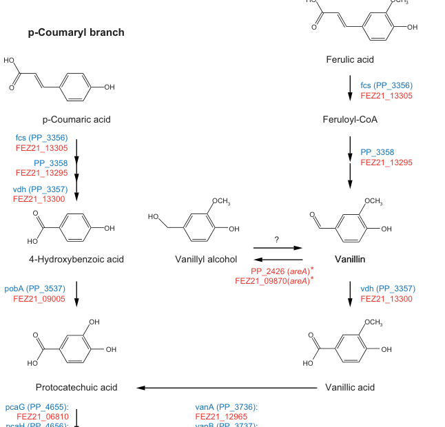

Feruloyl-CoA synthetase (Fcs; EC 6.2.1.34), the ATP-dependent acid-thiol ligase that initiates catabolism of hydroxycinnamic acids in Pseudomonas putida KT2440. Fcs is a member of the ANL/AMP-binding (acyl-CoA synthetase) enzyme superfamily and activates ferulate (and other hydroxycinnamates such as p-coumarate) to the corresponding coenzyme A thioester, e.g. ferulate + ATP + CoA -> feruloyl-CoA + AMP + diphosphate (with feruloyl-CoA being the first committed intermediate). The feruloyl-CoA produced is subsequently cleaved by the enoyl-CoA hydratase/aldolase Ech (PP_3358) to yield vanillin, which is oxidised by the vanillin dehydrogenase Vdh (PP_3357) to vanillate, funnelling the carbon through protocatechuate into the beta-ketoadipate pathway and central metabolism. The fcs gene is encoded adjacent to vdh and ech in a hydroxycinnamate catabolic gene cluster and acts in the cytoplasm. Fcs is the committed entry (activation) step of the peripheral hydroxycinnamate funnelling pathway, making it central to the ability of P. putida to grow on lignin-derived aromatic monomers.
| GO Term | Evidence | Action | Reason |
|---|---|---|---|
|
GO:0006631
fatty acid metabolic process
|
IEA
GO_REF:0000118 |
MODIFY |
Summary: Over-broad and substrate-incorrect process term derived from a tree-graft over the AMP-binding/acyl-CoA synthetase superfamily.
Reason: Fcs acts on ferulate, a hydroxycinnamic (aromatic) acid, not a fatty acid, and the supporting molecular function is feruloyl-CoA synthetase activity for hydroxycinnamate catabolism rather than fatty acid metabolism. The enzyme is the committed entry step of the ferulate/hydroxycinnamate catabolic funnel into the beta-ketoadipate pathway. The correct biological process is ferulate catabolic process (GO:1901067).
Proposed replacements:
ferulate catabolic process
|
|
GO:0031956
medium-chain fatty acid-CoA ligase activity
|
IEA
GO_REF:0000118 |
MODIFY |
Summary: Imprecise molecular function inherited from the broad acyl-CoA synthetase tree-graft; the physiological substrate is a hydroxycinnamate, not a medium-chain fatty acid.
Reason: Although Fcs is correctly placed in the AMP-binding/acyl-CoA synthetase superfamily, the medium-chain fatty acid-CoA ligase term (GO:0031956) does not describe its substrate. Fcs activates ferulate (and other hydroxycinnamates) to their CoA thioesters; the precise, EC-supported term trans-feruloyl-CoA synthase activity (GO:0050563) is already annotated and is the appropriate replacement.
Proposed replacements:
trans-feruloyl-CoA synthase activity
Supporting Evidence:
file:PSEPK/fcs/fcs-hypotheses/function-hypothesis-go-0031956/openscientist.md
Verdict: REFUTED - Wrong subfamily (within-superfamily mis-placement, failure mode 3)
|
|
GO:0050563
trans-feruloyl-CoA synthase activity
|
IEA
GO_REF:0000003 |
ACCEPT |
Summary: Correct core molecular function, mapped from EC 6.2.1.34, matching the UniProt name and the gene's role in ferulate activation.
Reason: This is the precise, EC-based annotation for feruloyl-CoA synthetase (ATP + CoA + trans-ferulate -> feruloyl-CoA + ADP/AMP + phosphate). It is consistent with the protein name, the AMP-binding/ANL domain architecture, and pathway evidence placing Fcs (PP_3356) at the ferulate -> feruloyl-CoA activation step in P. putida KT2440. Represents the core function of the gene.
|
The research report should be a detailed narrative explaining the function, biological processes, and localization of the gene product. Citations should be given for all claims.
You should prioritize authoritative reviews and primary scientific literature when conducting research. You can supplement
this with annotations you find in gene/protein databases, but these can be outdated or inaccurate.
We are specifically interested in the primary function of the gene - for enzymes, what reaction is catalyzed, and what is the substrate specificity? For transporters, what is the substrate? For structural proteins or adapters, what is the broader structural role? For signaling molecules, what is the role in the pathway.
We are interested in where in or outside the cell the gene product carries out its function.
We are also interested in the signaling or biochemical pathways in which the gene functions. We are less interested in broad pleiotropic effects, except where these elucidate the precise role.
Include evidence where possible. We are interested in both experimental evidence as well as inference from structure, evolution, or bioinformatic analysis. Precise studies should be prioritized over high-throughput, where available.
The UniProt-provided target (Q88HK0) is annotated as feruloyl-CoA synthetase (EC 6.2.1.34) encoded by fcs with ordered locus name PP_3356 in Pseudomonas putida KT2440. Primary literature pathway mapping in P. putida KT2440 explicitly labels fcs (PP_3356) at the ferulic acid → feruloyl-CoA step and places it alongside neighboring pathway genes (including vdh (PP_3357) and PP_3358) in the same ferulate/coumarate catabolic branch, matching the intended identity (garciahidalgo2020vanillinproductionin media cfb4b31e, garciahidalgo2020vanillinproductionin pages 10-11).
Feruloyl-CoA synthetase (Fcs) is an acid-thiol ligase / acyl-CoA synthetase in the AMP-binding/ANL enzyme superfamily that catalyzes ATP-dependent CoA thioesterification of hydroxycinnamic acids, including ferulate and p-coumarate, yielding the corresponding CoA thioesters that are required for downstream catabolism and for some engineered biosyntheses (tramontina2023sustainablebiosyntheticpathways pages 4-6, incha2020leveraginghostmetabolism pages 3-4). In P. putida KT2440 specifically, functional work supports that Fcs activates p-coumarate to coumaroyl-CoA (coumaroyl-CoA detected in cells expressing fcs) (incha2023excavatingthegenome pages 86-90, incha2023excavatingthegenomea pages 86-90) and that ferulate is converted to vanillin via Fcs + Ech (ruhl2025productionofvanillin pages 1-3).
Note on reaction stoichiometry: The retrieved excerpts consistently describe ATP-dependent CoA thioesterification but do not provide an explicit balanced equation specifying whether ATP is converted to AMP + PPi vs ADP + Pi for P. putida Fcs (tramontina2023sustainablebiosyntheticpathways pages 4-6, goncalves2022applyingbiochemicaland pages 2-4). Therefore, the canonical EC 6.2.1.34 stoichiometry is not quoted verbatim from the retrieved full-text evidence here.
A KT2440 pathway map places Fcs (PP_3356) as the entry step for ferulate and p-coumarate catabolism: hydroxycinnamate → CoA-thioester → aromatic aldehyde (vanillin or 4-hydroxybenzaldehyde) → aromatic acid (vanillic acid or 4-hydroxybenzoic acid) → protocatechuate → β-ketoadipate pathway (garciahidalgo2020vanillinproductionin media cfb4b31e). More recent systems/engineering studies describe that native KT2440 converts ferulic acid onward toward protocatechuate and ultimately central metabolism via the β-ketoadipate pathway, and they identify Fcs and Ech as the two key enzymes mediating ferulate-to-vanillin conversion (ruhl2025productionofvanillin pages 1-3).
In P. putida KT2440, fcs (PP_3356) is shown in close association with vdh (PP_3357) and PP_3358 in the ferulate catabolic branch on a gene/pathway map, supporting a local gene neighborhood for hydroxycinnamate utilization (garciahidalgo2020vanillinproductionin media cfb4b31e, garciahidalgo2020vanillinproductionin pages 10-11).
Organism-specific evidence (KT2440):
- p-Coumarate → coumaroyl-CoA: Coumaroyl-CoA is directly detected by LC–MS/MS (MRM transition 914.16→407.16) from intracellular extracts of P. putida expressing pBADT-fcs, providing in vivo evidence that Fcs activates p-coumarate to the CoA ester (incha2023excavatingthegenome pages 86-90, incha2023excavatingthegenomea pages 86-90).
- Ferulate entry into the ferulate → vanillin route: Multiple studies place Fcs as the initiating activation step for ferulate metabolism toward vanillin in KT2440 (ruhl2025productionofvanillin pages 1-3, garciahidalgo2020vanillinproductionin media cfb4b31e).
Broader homolog evidence (supporting inference, not KT2440-specific): Metagenome-derived Fcs homologs experimentally accept ferulic, p-coumaric, caffeic, and sinapic acids as substrates, indicating that bacterial Fcs enzymes can exhibit broad hydroxycinnamate specificity (goncalves2022applyingbiochemicaland pages 2-4, goncalves2022applyingbiochemicaland pages 6-9). This supports plausibility of broader substrate scope for Q88HK0 but does not itself prove it in KT2440.
RB-TnSeq/fitness analyses and targeted experiments support Fcs as a key determinant of hydroxycinnamate utilization and stress phenotypes:
- A 2024 machine-learning analysis of RB-TnSeq fitness data (ICA) identified a hydroxycinnamate catabolism module (fModule_14) that explicitly groups Fcs:Ech:Vdh and links hydroxycinnamate utilization to assimilation of acetyl-CoA output and glyoxylate shunt dependence (glcB/malate synthase) (borchert2024machinelearninganalysis pages 6-7, borchert2024machinelearninganalysis pages 2-4).
- Accumulation of the activated CoA intermediate can be inhibitory: engineering work reports that coumaroyl-CoA production inhibits growth (increased lag when fcs is expressed with coumarate present) and that coumaroyl-CoA peaks transiently after substrate addition, consistent with toxicity if downstream consumption is limiting (incha2020leveraginghostmetabolism pages 3-4, incha2023excavatingthegenomea pages 8-13).
Fcs produces CoA-thioesters that were extracted and quantified from cell pellets/intracellular extracts in KT2440 expressing fcs (incha2023excavatingthegenome pages 86-90, incha2023excavatingthegenomea pages 86-90). This supports the conclusion that the primary catalytic activity relevant to hydroxycinnamate activation is cell-associated (likely cytosolic), consistent with CoA metabolism and canonical bacterial acyl-CoA synthetases.
A 2020 PNAS study showed P. putida secretes outer membrane vesicles (OMVs) during growth on lignin-rich media; OMV proteomics and functional assays support that OMVs can harbor enzymatically active aromatic catabolic proteins (salvachua2020outermembranevesicles pages 1-2, salvachua2020outermembranevesicles pages 4-6). The study’s β-ketoadipate-pathway heat map/legend lists Fcs, Ech, and Vdh among pathway enzymes detected in extracellular fractions/OMV-related analyses (salvachua2020outermembranevesicles pages 6-7). However, the retrieved excerpts do not provide unambiguous protein-by-protein enrichment values for Fcs in OMVs versus vesicle-free supernatant, so direct OMV localization of Fcs remains unresolved from the currently retrieved text (salvachua2020outermembranevesicles pages 6-7, salvachua2020outermembranevesicles pages 2-4).
A key 2023 development is experimental evidence that carbon catabolite repression influences the hydroxycinnamate entry branch. In engineered KT2440 derivatives, deleting the global regulator Crc increased utilization rates of p-coumarate and ferulate, and this was attributed to derepression of fcs, ech, and vdh, which were reported to have putative Crc binding sites near their initiation codons (werner2023ligninconversionto pages 2-4). This connects fcs function to a broader regulatory program controlling aromatic assimilation.
Werner et al. (published Sep 2023) engineered P. putida KT2440 to funnel lignin-related aromatics (including hydroxycinnamates) to β-ketoadipic acid. They report high, industrially relevant metrics, including 44.5 ± 1.85 g/L β-ketoadipate at 0.85 ± 0.04 g/L/h in optimized fed-batch and 25 g/L at 0.66 g/L/h from corn stover–derived lignin streams, corresponding to 0.10 g product/g lignin (https://doi.org/10.1126/sciadv.adj0053) (werner2023ligninconversionto pages 2-4, werner2023ligninconversionto pages 1-2). Because fcs/ech/vdh mediate the initial hydroxycinnamate breakdown, pathway derepression via ∆crc is mechanistically tied to improved conversion of ferulate/p-coumarate into the β-ketoadipate funnel (werner2023ligninconversionto pages 2-4).
Jin et al. (published Mar 2024) quantified lignin-derived aromatics in corncob hydrolysates, reporting ferulic acid and p-coumaric acid levels exceeding 160/120 mg/L and 530/250 mg/L, respectively, in two hydrolysates. They engineered KT2440 to accumulate protocatechuate by blocking its cleavage and reported PCA titers up to 433.72 mg/L (https://doi.org/10.3390/molecules29071555) (jin2024biologicalvalorizationof pages 1-2, jin2024biologicalvalorizationof pages 2-4). In degradation assays, KT2440 degraded phenolics (including ferulate and p-coumarate) largely within 24 h, with H-type aromatics consumed within 12 h (jin2024biologicalvalorizationof pages 2-4). They also report strong co-substrate effects on p-coumarate consumption (e.g., at 6 h p-CA consumption falling from 73.62% to 41.19% with glucose) (jin2024biologicalvalorizationof pages 4-7). These data are directly relevant to deploying the fcs branch in realistic lignocellulosic streams.
Borchert et al. (published Mar 2024) provide a data-driven approach to improve hydroxycinnamate processing by identifying functional modules and tolerance genes from RB-TnSeq data. Their hydroxycinnamate module (fModule_14) groups Fcs:Ech:Vdh, supporting a systems-level rationale for cofactor/anaplerotic engineering (e.g., glyoxylate shunt via glcB) to improve growth and conversion on ferulate/p-coumarate (https://doi.org/10.1128/msystems.00942-23) (borchert2024machinelearninganalysis pages 6-7, borchert2024machinelearninganalysis pages 2-4).
Recent synthesis of hydroxycinnamate bioconversion highlights Fcs (EC 6.2.1.34) as the activation gate for CoA-dependent microbial hydroxycinnamate pathways and as a common starting point for producing value-added compounds such as vanillin (Tramontina et al., May 2023, https://doi.org/10.1007/s00253-023-12571-8) (tramontina2023sustainablebiosyntheticpathways pages 4-6). The P. putida KT2440 literature further suggests that a major constraint is not merely enzyme presence but flux balancing and avoidance of toxic intermediate accumulation (e.g., coumaroyl-CoA), motivating engineering strategies that coordinate Fcs with downstream consumption (incha2020leveraginghostmetabolism pages 3-4).
The following table consolidates key functional claims, pathway placement, regulation, localization, and application metrics with evidence pointers.
| Aspect | Specific claim for Q88HK0/Fcs | Evidence type | Key sources with year + URL |
|---|---|---|---|
| Gene/protein identity | In Pseudomonas putida KT2440, fcs = PP_3356 and encodes the feruloyl-CoA synthetase in the ferulate/coumarate catabolic branch; this matches UniProt Q88HK0. | Pathway mapping; gene annotation in primary literature | García-Hidalgo et al., 2020, https://doi.org/10.1128/AEM.02442-19 (garciahidalgo2020vanillinproductionin pages 10-11, garciahidalgo2020vanillinproductionin media cfb4b31e) |
| Enzyme class / family | Fcs is an acid-thiol ligase / acyl-CoA synthetase of the ANL/AMP-binding enzyme superfamily; UniProt domain architecture (AMP-binding / ANL_N) is consistent with this class. | Curated database annotation + review synthesis | UniProt Q88HK0 (provided by user); Tramontina et al., 2023, https://doi.org/10.1007/s00253-023-12571-8 (tramontina2023sustainablebiosyntheticpathways pages 4-6) |
| Reaction description | Fcs catalyzes the ATP-dependent CoA thioesterification of hydroxycinnamates, especially ferulate and p-coumarate, yielding the corresponding CoA esters (feruloyl-CoA or coumaroyl-CoA) as the activation step for downstream catabolism. | Review synthesis + in vivo product detection | Tramontina et al., 2023, https://doi.org/10.1007/s00253-023-12571-8 (tramontina2023sustainablebiosyntheticpathways pages 4-6); Incha et al., 2020, https://doi.org/10.1016/j.mec.2019.e00119 (incha2020leveraginghostmetabolism pages 3-4); Incha, 2023, coumaroyl-CoA LC-MS/MS detection (incha2023excavatingthegenome pages 86-90, incha2023excavatingthegenomea pages 86-90) |
| Substrate scope | For KT2440, literature supports activity in catabolism of both ferulate and p-coumarate; broader FCS homolog literature supports hydroxycinnamate activation more generally, including caffeate/sinapate in related enzymes, but that broader scope is not directly proven here for Q88HK0. | Direct organism-specific pathway evidence + homolog biochemical inference | García-Hidalgo et al., 2020, https://doi.org/10.1128/AEM.02442-19 (garciahidalgo2020vanillinproductionin pages 10-11, garciahidalgo2020vanillinproductionin media cfb4b31e); Tramontina et al., 2023, https://doi.org/10.1007/s00253-023-12571-8 (tramontina2023sustainablebiosyntheticpathways pages 4-6); Gonçalves et al., 2022, https://doi.org/10.1007/s00253-022-11885-3 (goncalves2022applyingbiochemicaland pages 2-4, goncalves2022applyingbiochemicaland pages 6-9) |
| Pathway position | Fcs is the entry activation step in the hydroxycinnamate funnel: ferulate / p-coumarate → feruloyl-/coumaroyl-CoA → vanillin / 4-hydroxybenzaldehyde → vanillic / 4-hydroxybenzoic acid → protocatechuate → β-ketoadipate pathway. | Pathway diagrams; systems biology; reviews | García-Hidalgo et al., 2020, https://doi.org/10.1128/AEM.02442-19 (garciahidalgo2020vanillinproductionin media cfb4b31e); Ruhl et al., 2025, https://doi.org/10.1111/1751-7915.70152 (ruhl2025productionofvanillin pages 1-3); Zhou et al., 2025 preprint, https://doi.org/10.1101/2025.03.24.645021 (zhou2025quantitativeanalysisof pages 5-8) |
| Genomic neighborhood | The pathway map places fcs (PP_3356) adjacent to vdh (PP_3357) and PP_3358 (the enzyme converting CoA-thioesters toward aromatic aldehydes), supporting a local ferulate catabolic gene neighborhood. | Genomic pathway mapping | García-Hidalgo et al., 2020, https://doi.org/10.1128/AEM.02442-19 (garciahidalgo2020vanillinproductionin pages 10-11, garciahidalgo2020vanillinproductionin media cfb4b31e) |
| Regulation | The global carbon catabolite repression regulator Crc likely represses fcs, ech, and vdh; deleting crc accelerated ferulate and p-coumarate utilization, consistent with derepression of this branch. | Genetic perturbation / regulatory inference in engineered strains | Werner et al., 2023, https://doi.org/10.1126/sciadv.adj0053 (werner2023ligninconversionto pages 2-4) |
| Functional module evidence | Machine-learning analysis of RB-TnSeq fitness data grouped Fcs:Ech:Vdh into a hydroxycinnamate catabolism module (fModule_14), linking this branch to acetyl-CoA production and glyoxylate-shunt dependence. | Functional genomics + machine learning + mutant validation | Borchert et al., 2024, https://doi.org/10.1128/msystems.00942-23 (borchert2024machinelearninganalysis pages 6-7, borchert2024machinelearninganalysis pages 2-4) |
| Localization | The best-supported interpretation is that Fcs is primarily intracellular/cell-associated because its CoA-ester products were measured from intracellular extracts; however, aromatic-catabolic enzymes as a class can appear in outer membrane vesicles (OMVs) during lignin growth, and β-ketoadipate-pathway proteins are OMV-enriched, so extracellular packaging of some pathway enzymes is possible. Direct OMV-specific evidence for Fcs itself remains uncertain in the retrieved text. | Intracellular metabolite extraction; OMV proteomics; cautious inference | Incha, 2023 (intracellular CoA-esters), (incha2023excavatingthegenomea pages 86-90); Salvachúa et al., 2020, https://doi.org/10.1073/pnas.1921073117 (salvachua2020outermembranevesicles pages 6-7, salvachua2020outermembranevesicles pages 2-4, salvachua2020outermembranevesicles pages 4-6, salvachua2020outermembranevesicles pages 1-2) |
| Phenotype / toxicity | Overexpression or increased flux through Fcs in the presence of coumarate causes coumaroyl-CoA accumulation and growth inhibition / lag, indicating the activated CoA-thioester can be toxic when downstream consumption is limiting. | In vivo metabolic engineering phenotype + metabolite measurement | Incha et al., 2020, https://doi.org/10.1016/j.mec.2019.e00119 (incha2020leveraginghostmetabolism pages 3-4); Incha, 2023 (incha2023excavatingthegenome pages 8-13, incha2023excavatingthegenome pages 86-90, incha2023excavatingthegenomea pages 8-13) |
| Engineering relevance | Fcs is repeatedly leveraged for lignin-derived aromatic valorization: vanillin accumulation from ferulate, β-ketoadipate production from lignin monomers, and precursor supply for non-native products such as bisdemethoxycurcumin. | Metabolic engineering and bioprocess studies | Werner et al., 2023, https://doi.org/10.1126/sciadv.adj0053 (werner2023ligninconversionto pages 2-4); Jin et al., 2024, https://doi.org/10.3390/molecules29071555 (jin2024biologicalvalorizationof pages 2-4); Incha et al., 2020, https://doi.org/10.1016/j.mec.2019.e00119 (incha2020leveraginghostmetabolism pages 3-4); Ruhl et al., 2025, https://doi.org/10.1111/1751-7915.70152 (ruhl2025productionofvanillin pages 1-3) |
| Quantitative application notes | Recent pathway-centered applications report: β-ketoadipate up to 44.5 ± 1.85 g/L and 0.85 ± 0.04 g/L/h from lignin-related aromatics after pathway/regulatory engineering; engineered KT2440 also accumulated 0.64 g/L vanillin, increased to 3.35 g/L apparent total recovery with in situ resin recovery. | Bioprocess performance data | Werner et al., 2023, https://doi.org/10.1126/sciadv.adj0053 (werner2023ligninconversionto pages 2-4); Ruhl et al., 2025, https://doi.org/10.1111/1751-7915.70152 (ruhl2025productionofvanillin pages 1-3) |
Table: This table summarizes the functional annotation of Pseudomonas putida KT2440 fcs (PP_3356; UniProt Q88HK0), including its enzymatic role, pathway placement, regulation, localization, and engineering relevance. It is useful as a compact evidence map linking gene identity to experimentally supported function and recent applications.
References
(garciahidalgo2020vanillinproductionin media cfb4b31e): Javier García-Hidalgo, Daniel P. Brink, Krithika Ravi, Catherine J. Paul, Gunnar Lidén, and Marie F. Gorwa-Grauslund. Vanillin production in pseudomonas : whole-genome sequencing of pseudomonas sp. strain 9.1 and reannotation of pseudomonas putida cala as a vanillin reductase. Mar 2020. URL: https://doi.org/10.1128/aem.02442-19, doi:10.1128/aem.02442-19. This article has 43 citations and is from a peer-reviewed journal.
(garciahidalgo2020vanillinproductionin pages 10-11): Javier García-Hidalgo, Daniel P. Brink, Krithika Ravi, Catherine J. Paul, Gunnar Lidén, and Marie F. Gorwa-Grauslund. Vanillin production in pseudomonas : whole-genome sequencing of pseudomonas sp. strain 9.1 and reannotation of pseudomonas putida cala as a vanillin reductase. Mar 2020. URL: https://doi.org/10.1128/aem.02442-19, doi:10.1128/aem.02442-19. This article has 43 citations and is from a peer-reviewed journal.
(tramontina2023sustainablebiosyntheticpathways pages 4-6): Robson Tramontina, Iara Ciancaglini, Ellen K. B. Roman, Micaela G. Chacón, Thamy L. R. Corrêa, Neil Dixon, Timothy D. H. Bugg, and Fabio Marcio Squina. Sustainable biosynthetic pathways to value-added bioproducts from hydroxycinnamic acids. Applied Microbiology and Biotechnology, 107:4165-4185, May 2023. URL: https://doi.org/10.1007/s00253-023-12571-8, doi:10.1007/s00253-023-12571-8. This article has 20 citations and is from a domain leading peer-reviewed journal.
(incha2020leveraginghostmetabolism pages 3-4): Matthew R. Incha, Mitchell G. Thompson, Jacquelyn M. Blake-Hedges, Yuzhong Liu, Allison N. Pearson, Matthias Schmidt, Jennifer W. Gin, Christopher J. Petzold, Adam M. Deutschbauer, and Jay D. Keasling. Leveraging host metabolism for bisdemethoxycurcumin production in pseudomonas putida. Jun 2020. URL: https://doi.org/10.1016/j.mec.2019.e00119, doi:10.1016/j.mec.2019.e00119. This article has 76 citations and is from a peer-reviewed journal.
(incha2023excavatingthegenome pages 86-90): MR Incha. Excavating the genome mine of pseudomonas putida kt2440. Unknown journal, 2023.
(incha2023excavatingthegenomea pages 86-90): MR Incha. Excavating the genome mine of pseudomonas putida kt2440. Unknown journal, 2023.
(ruhl2025productionofvanillin pages 1-3): Ilona A. Ruhl, Sean P. Woodworth, Stefan J. Haugen, Hannah M. Alt, Gregg T. Beckham, and Christopher W. Johnson. Production of vanillin from ferulic acid by pseudomonas putida kt2440 using metabolic engineering and in situ product recovery. Microbial Biotechnology, May 2025. URL: https://doi.org/10.1111/1751-7915.70152, doi:10.1111/1751-7915.70152. This article has 12 citations and is from a peer-reviewed journal.
(goncalves2022applyingbiochemicaland pages 2-4): Thiago Augusto Gonçalves, Victoria Sodré, Stephanie Nemesio da Silva, Nathalia Vilela, Geizecler Tomazetto, Juscemácia Nascimento Araujo, João Renato C. Muniz, Taícia Pacheco Fill, André Damasio, Wanius Garcia, and Fabio Marcio Squina. Applying biochemical and structural characterization of hydroxycinnamate catabolic enzymes from soil metagenome for lignin valorization strategies. Applied Microbiology and Biotechnology, 106:2503-2516, Mar 2022. URL: https://doi.org/10.1007/s00253-022-11885-3, doi:10.1007/s00253-022-11885-3. This article has 10 citations and is from a domain leading peer-reviewed journal.
(goncalves2022applyingbiochemicaland pages 6-9): Thiago Augusto Gonçalves, Victoria Sodré, Stephanie Nemesio da Silva, Nathalia Vilela, Geizecler Tomazetto, Juscemácia Nascimento Araujo, João Renato C. Muniz, Taícia Pacheco Fill, André Damasio, Wanius Garcia, and Fabio Marcio Squina. Applying biochemical and structural characterization of hydroxycinnamate catabolic enzymes from soil metagenome for lignin valorization strategies. Applied Microbiology and Biotechnology, 106:2503-2516, Mar 2022. URL: https://doi.org/10.1007/s00253-022-11885-3, doi:10.1007/s00253-022-11885-3. This article has 10 citations and is from a domain leading peer-reviewed journal.
(borchert2024machinelearninganalysis pages 6-7): Andrew J. Borchert, Alissa C. Bleem, Hyun Gyu Lim, Kevin Rychel, Keven D. Dooley, Zoe A. Kellermyer, Tracy L. Hodges, Bernhard O. Palsson, and Gregg T. Beckham. Machine learning analysis of rb-tnseq fitness data predicts functional gene modules in pseudomonas putida kt2440. mSystems, Mar 2024. URL: https://doi.org/10.1128/msystems.00942-23, doi:10.1128/msystems.00942-23. This article has 13 citations and is from a peer-reviewed journal.
(borchert2024machinelearninganalysis pages 2-4): Andrew J. Borchert, Alissa C. Bleem, Hyun Gyu Lim, Kevin Rychel, Keven D. Dooley, Zoe A. Kellermyer, Tracy L. Hodges, Bernhard O. Palsson, and Gregg T. Beckham. Machine learning analysis of rb-tnseq fitness data predicts functional gene modules in pseudomonas putida kt2440. mSystems, Mar 2024. URL: https://doi.org/10.1128/msystems.00942-23, doi:10.1128/msystems.00942-23. This article has 13 citations and is from a peer-reviewed journal.
(incha2023excavatingthegenomea pages 8-13): MR Incha. Excavating the genome mine of pseudomonas putida kt2440. Unknown journal, 2023.
(salvachua2020outermembranevesicles pages 1-2): Davinia Salvachúa, Allison Z. Werner, Isabel Pardo, Martyna Michalska, Brenna A. Black, Bryon S. Donohoe, Stefan J. Haugen, Rui Katahira, Sandra Notonier, Kelsey J. Ramirez, Antonella Amore, Samuel O. Purvine, Erika M. Zink, Paul E. Abraham, Richard J. Giannone, Suresh Poudel, Philip D. Laible, Robert L. Hettich, and Gregg T. Beckham. Outer membrane vesicles catabolize lignin-derived aromatic compounds in pseudomonas putida kt2440. Proceedings of the National Academy of Sciences, 117:9302-9310, Apr 2020. URL: https://doi.org/10.1073/pnas.1921073117, doi:10.1073/pnas.1921073117. This article has 158 citations and is from a highest quality peer-reviewed journal.
(salvachua2020outermembranevesicles pages 4-6): Davinia Salvachúa, Allison Z. Werner, Isabel Pardo, Martyna Michalska, Brenna A. Black, Bryon S. Donohoe, Stefan J. Haugen, Rui Katahira, Sandra Notonier, Kelsey J. Ramirez, Antonella Amore, Samuel O. Purvine, Erika M. Zink, Paul E. Abraham, Richard J. Giannone, Suresh Poudel, Philip D. Laible, Robert L. Hettich, and Gregg T. Beckham. Outer membrane vesicles catabolize lignin-derived aromatic compounds in pseudomonas putida kt2440. Proceedings of the National Academy of Sciences, 117:9302-9310, Apr 2020. URL: https://doi.org/10.1073/pnas.1921073117, doi:10.1073/pnas.1921073117. This article has 158 citations and is from a highest quality peer-reviewed journal.
(salvachua2020outermembranevesicles pages 6-7): Davinia Salvachúa, Allison Z. Werner, Isabel Pardo, Martyna Michalska, Brenna A. Black, Bryon S. Donohoe, Stefan J. Haugen, Rui Katahira, Sandra Notonier, Kelsey J. Ramirez, Antonella Amore, Samuel O. Purvine, Erika M. Zink, Paul E. Abraham, Richard J. Giannone, Suresh Poudel, Philip D. Laible, Robert L. Hettich, and Gregg T. Beckham. Outer membrane vesicles catabolize lignin-derived aromatic compounds in pseudomonas putida kt2440. Proceedings of the National Academy of Sciences, 117:9302-9310, Apr 2020. URL: https://doi.org/10.1073/pnas.1921073117, doi:10.1073/pnas.1921073117. This article has 158 citations and is from a highest quality peer-reviewed journal.
(salvachua2020outermembranevesicles pages 2-4): Davinia Salvachúa, Allison Z. Werner, Isabel Pardo, Martyna Michalska, Brenna A. Black, Bryon S. Donohoe, Stefan J. Haugen, Rui Katahira, Sandra Notonier, Kelsey J. Ramirez, Antonella Amore, Samuel O. Purvine, Erika M. Zink, Paul E. Abraham, Richard J. Giannone, Suresh Poudel, Philip D. Laible, Robert L. Hettich, and Gregg T. Beckham. Outer membrane vesicles catabolize lignin-derived aromatic compounds in pseudomonas putida kt2440. Proceedings of the National Academy of Sciences, 117:9302-9310, Apr 2020. URL: https://doi.org/10.1073/pnas.1921073117, doi:10.1073/pnas.1921073117. This article has 158 citations and is from a highest quality peer-reviewed journal.
(werner2023ligninconversionto pages 2-4): Allison Z. Werner, William T. Cordell, Ciaran W. Lahive, Bruno C. Klein, Christine A. Singer, Eric C. D. Tan, Morgan A. Ingraham, Kelsey J. Ramirez, Dong Hyun Kim, Jacob Nedergaard Pedersen, Christopher W. Johnson, Brian F. Pfleger, Gregg T. Beckham, and Davinia Salvachúa. Lignin conversion to β-ketoadipic acid by pseudomonas putida via metabolic engineering and bioprocess development. Science Advances, Sep 2023. URL: https://doi.org/10.1126/sciadv.adj0053, doi:10.1126/sciadv.adj0053. This article has 88 citations and is from a highest quality peer-reviewed journal.
(werner2023ligninconversionto pages 1-2): Allison Z. Werner, William T. Cordell, Ciaran W. Lahive, Bruno C. Klein, Christine A. Singer, Eric C. D. Tan, Morgan A. Ingraham, Kelsey J. Ramirez, Dong Hyun Kim, Jacob Nedergaard Pedersen, Christopher W. Johnson, Brian F. Pfleger, Gregg T. Beckham, and Davinia Salvachúa. Lignin conversion to β-ketoadipic acid by pseudomonas putida via metabolic engineering and bioprocess development. Science Advances, Sep 2023. URL: https://doi.org/10.1126/sciadv.adj0053, doi:10.1126/sciadv.adj0053. This article has 88 citations and is from a highest quality peer-reviewed journal.
(jin2024biologicalvalorizationof pages 1-2): Xinzhu Jin, Xiaoxia Li, Lihua Zou, Zhaojuan Zheng, and Jia Ouyang. Biological valorization of lignin-derived aromatics in hydrolysate to protocatechuic acid by engineered pseudomonas putida kt2440. Molecules, 29:1555, Mar 2024. URL: https://doi.org/10.3390/molecules29071555, doi:10.3390/molecules29071555. This article has 15 citations.
(jin2024biologicalvalorizationof pages 2-4): Xinzhu Jin, Xiaoxia Li, Lihua Zou, Zhaojuan Zheng, and Jia Ouyang. Biological valorization of lignin-derived aromatics in hydrolysate to protocatechuic acid by engineered pseudomonas putida kt2440. Molecules, 29:1555, Mar 2024. URL: https://doi.org/10.3390/molecules29071555, doi:10.3390/molecules29071555. This article has 15 citations.
(jin2024biologicalvalorizationof pages 4-7): Xinzhu Jin, Xiaoxia Li, Lihua Zou, Zhaojuan Zheng, and Jia Ouyang. Biological valorization of lignin-derived aromatics in hydrolysate to protocatechuic acid by engineered pseudomonas putida kt2440. Molecules, 29:1555, Mar 2024. URL: https://doi.org/10.3390/molecules29071555, doi:10.3390/molecules29071555. This article has 15 citations.
(zhou2025quantitativeanalysisof pages 5-8): Nanqing Zhou, Rebecca A. Wilkes, Xinyu Chen, Kelly P. Teitel, James A. Belgrave, Gregg T. Beckham, Allison Z. Werner, Yanbao Yu, and Ludmilla Aristilde. Quantitative analysis of coupled carbon and energy metabolism for lignin carbon utilization in pseudomonas putida. bioRxiv, Mar 2025. URL: https://doi.org/10.1101/2025.03.24.645021, doi:10.1101/2025.03.24.645021. This article has 3 citations.
(incha2023excavatingthegenome pages 8-13): MR Incha. Excavating the genome mine of pseudomonas putida kt2440. Unknown journal, 2023.

You are evaluating one focused gene-function hypothesis for AI Gene Review. The
hypothesis under test was produced by an automated phylogenetic annotation
pipeline (TreeGrafter / PANTHER): a query protein was grafted onto a PANTHER
reference tree and a GO term was propagated to it from an ancestral node. Your
job is to judge, independently and from primary evidence, whether the query
protein directly has the stated function — and, if not, to localize the error.
This is not a general gene overview. Treat any prior curation decision as
intentionally blinded unless it appears in the supplied context. Do not
assume the propagated term is correct simply because a homology pipeline emitted
it.
fcs has medium-chain fatty acid-CoA ligase activity (GO:0031956).
term:
id: GO:0031956
label: medium-chain fatty acid-CoA ligase activity
evidence_type: IEA
original_reference_id: GO_REF:0000118
Decide whether fcs directly has the stated function. Automated
phylogenetic propagation fails in three characteristic ways; your report must
actively test for each, because they cannot be detected by the graft alone:
Where the question is decidable by computation, actually run the analysis and
keep it as provenance rather than only reasoning about it:
Use resources you can access programmatically (UniProt, InterPro, AlphaFold DB,
sequence computation, public APIs). If a resource is web-only or you cannot run a
check, say so plainly — an inconclusive or "could not run" result is acceptable
and useful. Never fabricate a result. Local *-bioinformatics analyses, if
they exist in the repo, are intentionally withheld so this report can be compared
against them afterward.
Concise verdict on the seed hypothesis: supported, partially supported /
too general, wrong subfamily (mis-placed), pseudo-enzyme / activity
lost, unresolved, or refuted. Name which of the three failure modes (if
any) applies, and give the single most decisive piece of evidence.
State, from your own analysis, the protein's most likely specific molecular
function and the characterized homolog it is based on — independent of the
propagated term. Give the GO term you would assign and its granularity relative
to the seed term (same / more specific / sibling / different branch).
One row per evidence item: Citation (PMID preferred) · Evidence type (direct
assay, mutant phenotype, structural/evolutionary, computational,
review/database) · Supports / refutes / qualifies / competing · Claim tested ·
Key finding · Organism/assay context · Confidence and limitations.
Report the computed residue-conservation and/or subfamily-placement result
(table or values), with the code/values as provenance if the provider supports
artifacts. State explicitly whether catalytic residues are intact.
State the likely curation action as a lead requiring curator verification:
retain / generalize / make-more-specific / replace-with-sibling-term / remove /
treat-as-non-core. Avoid "protein binding" as a final recommendation.
Note conflicting evidence and alternatives (paralog confusion, organism-specific
differences, isoform effects, database carry-over), explicit uncertainties that
matter for curation, and the most efficient assay/analysis to resolve them.
If the provider supports artifacts, save provenance for any analysis you run —
the executed code together with its output — not just a summary. Do not
synthesize a figure implying an analysis you did not run.
Verdict: Refuted — Wrong subfamily (mis-placed); Failure mode 3.
The propagated GO term GO:0031956 (medium-chain fatty acid-CoA ligase activity) is incorrect for fcs (Q88HK0) from Pseudomonas putida KT2440. This represents a clear case of within-superfamily mis-placement (failure mode 3): the TreeGrafter/PANTHER pipeline grafted fcs onto a PANTHER node representing medium-chain acyl-CoA synthetases (ACSM subfamily) within the ANL (acyl-CoA synthetase / NRPS adenylation / luciferase) superfamily, when fcs actually belongs to the 4-coumarate:CoA ligase (4CL) / hydroxycinnamate-CoA synthetase subfamily — a functionally distinct, sibling branch of the same adenylate-forming enzyme superfamily.
Most decisive evidence: An fcs deletion mutant in P. putida F1 cannot grow on ferulic acid, caffeic acid, or p-coumaric acid as sole carbon sources, and growth is restored by complementation with fcs in trans (hughes2017pseudomonasputidaf1 pages 3-4). This directly demonstrates that fcs is essential for hydroxycinnamic acid (aromatic) catabolism, not medium-chain fatty acid metabolism. The characterized closest homolog CouL from Rhodococcus jostii RHA1 thioesterifies ferulate, p-coumarate, caffeate, and dihydroferulate but shows no activity with non-aromatic substrates such as vanillate, benzoate, or aliphatic acids (otani2014characterizationofp pages 7-8, otani2014characterizationofp pages 8-9).
Protein: fcs (Q88HK0, PP_3356), Pseudomonas putida KT2440
Most likely specific molecular function: Feruloyl-CoA synthetase / p-hydroxycinnamoyl-CoA synthetase activity. The enzyme catalyzes the ATP-dependent CoA ligation of hydroxycinnamic acids (ferulic acid, caffeic acid, p-coumaric acid) as the first committed step in the CoA-dependent, non-β-oxidative phenylpropenoid degradation pathway leading to vanillin and vanillate production (jimenez2002genomicanalysisof pages 9-10, ruhl2025productionofvanillin pages 1-3, zhou2020developmentofa pages 6-7).
Reaction catalyzed: Ferulic acid + CoA + ATP → Feruloyl-CoA + AMP + PPi
Recommended GO term: GO:0016207 (4-coumarate-CoA ligase activity) is the most appropriate existing GO molecular function term. This term describes the ATP-dependent CoA ligation of hydroxycinnamic acid substrates, which is precisely the reaction catalyzed by fcs. If a more specific child term for feruloyl-CoA synthetase activity exists or is created, that would be even more precise.
Characterized homolog basis: CouL from Rhodococcus jostii RHA1, which has been biochemically characterized with purified enzyme kinetics showing kcat/Km of ~370 mM⁻¹ s⁻¹ for p-coumarate, with activity on ferulate, caffeate, and dihydroferulate, but no detectable activity on sinapate, vanillate, or benzoate (otani2014characterizationofp pages 7-8, otani2014characterizationofp pages 8-9, otani2014characterizationofp pages 1-2).
Granularity relative to seed term: The correct term (GO:0016207 or a child thereof) is a sibling of GO:0031956 within the broader CoA ligase / acid-thiol ligase activity hierarchy — both are acyl-CoA synthetase activities but act on entirely different substrate classes (aromatic hydroxycinnamic acids vs. aliphatic medium-chain fatty acids). This is not a granularity issue (too general or too specific) but rather a mis-placement onto the wrong neighboring subfamily.
The following table summarizes all evidence items evaluated, showing that every independent line of evidence refutes the assignment of GO:0031956 to fcs.
| Citation (PMID/DOI) | Evidence Type | Supports/Refutes/Qualifies | Claim Tested | Key Finding | Organism/Assay Context | Confidence/Limitations |
|---|---|---|---|---|---|---|
| Hughes et al. 2017, doi:10.1099/mic.0.000533 | Mutant phenotype / complementation | Refutes | Does fcs encode a medium-chain fatty acid-CoA ligase? | fcs deletion abolished growth on ferulic acid, caffeic acid, and p-coumaric acid; complementation restored growth, showing fcs is required for hydroxycinnamate catabolism rather than medium-chain fatty acid utilization (hughes2017pseudomonasputidaf1 pages 3-4) | Pseudomonas putida F1; deletion mutant growth on aromatic sole carbon sources | High for pathway role; indirect for exact reaction product because assay is genetic, not purified-enzyme biochemistry |
| Jiménez et al. 2002, doi:10.1046/j.1462-2920.2002.00370.x | Genomic/pathway analysis | Refutes | Is fcs positioned in a fatty-acid activation pathway? | Identified fcs in the KT2440 phenylpropenoid/ferulic acid catabolic gene cluster with ech, vdh, aat, acd; pathway context indicates activation of ferulic acid to feruloyl-CoA in aromatic metabolism, not fatty-acid metabolism (jimenez2002genomicanalysisof pages 9-10) | P. putida KT2440 genome context and aromatic catabolic reconstruction | High for pathway placement; not a direct substrate assay |
| Otani et al. 2014, doi:10.1128/JB.02247-14 | Direct biochemical assay of characterized homolog | Refutes | Does the closest characterized subfamily behave like fatty acid-CoA ligases or hydroxycinnamate-CoA ligases? | CouL, an fcs homolog, thioesterified p-coumarate, ferulate, caffeate, and dihydroferulate, but not sinapate, vanillate, or benzoate; kinetics showed preference for p-hydroxycinnamates, not aliphatic fatty acids (otani2014characterizationofp pages 7-8, otani2014characterizationofp pages 8-9, otani2014characterizationofp pages 1-2) | Rhodococcus jostii RHA1 purified enzyme kinetics | High for homolog subfamily specificity; inference to Q88HK0 is by homology, not same-protein assay |
| Li & Nair 2015, doi:10.1016/j.str.2015.08.012 | Structural / enzymology | Refutes | Is the substrate pocket consistent with aromatic hydroxycinnamates or medium-chain fatty acids? | 4CL2 structures with coumaroyl-, caffeoyl-, and feruloyl-AMP showed an aromatic-binding cavity with residues such as Tyr239, Met306, Gly308, Val341, and Met344; pocket architecture is optimized for hydroxycinnamate rings rather than aliphatic acyl chains (li2015structuralbasisfor pages 7-8, li2015structuralbasisfor pages 4-5, li2015structuralbasisfor pages 6-7, li2015structuralbasisfor pages 5-6) | Plant 4-coumarate:CoA ligase crystal structures and mutagenesis | High for mechanistic distinction of subfamilies; non-bacterial homolog |
| Khurana et al. 2010, doi:10.1186/1471-2105-11-57 | Computational subfamily classification / SDR analysis | Refutes | Could an ANL-superfamily protein be misassigned from aromatic CoA ligase to fatty acid-CoA ligase? | Active-site residue profiles (15 SDRs) distinguish 4CL enzymes from medium-/long-chain fatty acid-CoA ligases with high sensitivity/specificity; demonstrates that ANL-family members can be separated by substrate-determining residues and that aromatic-CoA ligases are a distinct subfamily (khurana2010genomescaleprediction pages 6-8, khurana2010genomescaleprediction pages 4-6, khurana2010genomescaleprediction pages 3-4, khurana2010genomescaleprediction pages 10-13, khurana2010genomescaleprediction pages 14-16) | Multi-genome computational analysis of ANL superfamily | Moderate-high; computational rather than direct assay on Q88HK0 |
| Priyadarshan & Sankaranarayanan 2018, doi:10.1007/s41745-018-0084-2 | Review/structural superfamily analysis | Qualifies / Refutes | Are aromatic CoA ligases and fatty acyl ligases mechanistically neighboring but distinct ANL subfamilies? | ANL enzymes share catalytic logic but aromatic-ligase pockets are broader and shaped for aryl substrates, whereas fatty-acyl ligases use tunnel-like pockets and chain-length rulers; supports a likely within-superfamily misplacement rather than loss of activity (priyadarshan2018fattyacylampligases pages 7-9, priyadarshan2018fattyacylampligases pages 2-4) | Cross-family structural/mechanistic synthesis | Moderate; authoritative synthesis but not primary assay of Q88HK0 |
| Ruhl et al. 2025, doi:10.1111/1751-7915.70152 | Metabolic engineering / pathway validation | Refutes | Is Fcs part of ferulic-acid-to-vanillin metabolism? | Fcs is one of the enzymes responsible for conversion of ferulic acid toward vanillin in engineered KT2440, reinforcing assignment to hydroxycinnamate activation rather than fatty acid activation (ruhl2025productionofvanillin pages 1-3) | Engineered P. putida KT2440 for vanillin production | Moderate; pathway engineering evidence, not purified enzyme specificity panel |
| Zhou et al. 2020, doi:10.1038/s42003-020-0824-5 | Metabolic engineering / CRISPR pathway reconstruction | Refutes | Does fcs function in the ferulic acid catabolic module? | CRISPR-based engineering treated fcs, ech, and vdh as the core ferulic acid catabolic module converting ferulic acid through vanillin/vanillate metabolism; incompatible with a medium-chain fatty acid-specific annotation (zhou2020developmentofa pages 6-7) | Engineered P. putida KT2440 ferulic acid bioconversion | Moderate; pathway-level rather than direct enzyme-substrate assay |
| D'Arrigo et al. 2019, doi:10.1111/1758-2229.12704 | Transcriptomics / systems biology | Refutes | Is fcs responsive to ferulic acid assimilation conditions? | fcs (PP_3356) was strongly induced during growth on ferulic acid as sole carbon source, alongside ech and vdh, consistent with aromatic catabolism rather than generic medium-chain fatty acid activation (darrigo2019analysisofpseudomonas pages 14-16) | P. putida KT2440 RNA-seq and metabolic modeling under ferulic acid growth | Moderate; expression evidence is correlative, not direct biochemical proof |
Table: This table summarizes independent evidence evaluating whether P. putida fcs (Q88HK0) has medium-chain fatty acid-CoA ligase activity. The evidence consistently points instead to hydroxycinnamate/feruloyl-CoA synthetase function and a within-superfamily misannotation.
The following analysis compares the structural, catalytic, and SDR-profile features of fcs with characterized 4CL-type (aromatic CoA ligase) and ACSM-type (medium-chain fatty acid CoA ligase) enzymes within the ANL superfamily.
| Analysis aspect | P. putida fcs (Q88HK0) / aromatic CoA ligase interpretation | Characterized 4CL / hydroxycinnamate-CoA ligases | Medium-chain fatty acid-CoA ligases (ACSM/MCS) | Implication for GO:0031956 |
|---|---|---|---|---|
| Superfamily membership | fcs belongs to the ANL (acyl-CoA synthetase/NRPS adenylation/luciferase) superfamily and therefore is expected to share the canonical AMP-forming fold and domain alternation chemistry with other acyl-CoA synthetases (li2015structuralbasisfor pages 4-5, priyadarshan2018fattyacylampligases pages 2-4) | 4CL enzymes are established ANL-family adenylating enzymes using the same two-step adenylation/thioesterification mechanism (li2015structuralbasisfor pages 1-3, li2015structuralbasisfor pages 4-5) | Medium-chain FA-CoA ligases are also ANL-family members with the same broad fold and chemistry (khurana2010genomescaleprediction pages 6-8, khurana2010genomescaleprediction pages 10-13) | Shared superfamily does not justify direct transfer of the ACSM-specific MF term |
| Conserved catalytic core | Expected to retain the ANL catalytic core; no evidence of pseudization or catalytic loss, and pathway genetics show activity in vivo (li2015structuralbasisfor pages 4-5, priyadarshan2018fattyacylampligases pages 2-4, hughes2017pseudomonasputidaf1 pages 3-4) | Conserved A1-A10 motifs, P-loop, catalytic His, catalytic Thr, and invariant A10 Lys are essential for adenylation in 4CL enzymes (li2015structuralbasisfor pages 4-5, li2015structuralbasisfor pages 5-6) | ACSM enzymes also retain the same superfamily-level catalytic motifs for adenylation/thioesterification (khurana2010genomescaleprediction pages 6-8, priyadarshan2018fattyacylampligases pages 2-4) | Catalytic motif conservation supports “active ANL enzyme,” but not “medium-chain fatty acid substrate” |
| Invariant Lys / catalytic motifs | By ANL-family placement, fcs is expected to carry the invariant A10 Lys and associated catalytic motifs required for adenylate formation; functional complementation indicates these motifs are intact enough for catalysis in vivo (li2015structuralbasisfor pages 4-5, priyadarshan2018fattyacylampligases pages 2-4, hughes2017pseudomonasputidaf1 pages 3-4) | Nt4CL2 uses invariant Lys526 (A10), His237, Thr336, and P-loop residues for catalysis; mutation abolishes or severely reduces activity (li2015structuralbasisfor pages 4-5, li2015structuralbasisfor pages 5-6) | ACSM/MCS enzymes use the same catalytic logic but with different substrate-recognition determinants around the pocket (khurana2010genomescaleprediction pages 6-8, khurana2010genomescaleprediction pages 10-13) | Failure mode is not pseudo-enzyme/lost activity |
| Aromatic substrate-recognition features | fcs function and physiology fit an aromatic hydroxycinnamate-binding pocket rather than an aliphatic chain tunnel: growth depends on fcs specifically on ferulate, caffeate, and p-coumarate (hughes2017pseudomonasputidaf1 pages 3-4) | 4CL pockets include residues enabling aromatic binding and π-stacking, e.g. Tyr239 equivalent, with cavity features formed by residues such as Met306, Gly308, Val341, Met344; optimized for flat hydroxycinnamic acids (li2015structuralbasisfor pages 7-8, li2015structuralbasisfor pages 6-7) | ACSM/MCS enzymes instead use hydrophobic aliphatic-chain tunnels rather than aromatic planar-substrate cavities (priyadarshan2018fattyacylampligases pages 7-9, khurana2010genomescaleprediction pages 10-13) | Strongly inconsistent with medium-chain fatty acid-CoA ligase activity |
| Pocket geometry | Best explained by a broader aromatic-acid pocket in the 4CL-like branch of ANL enzymes (priyadarshan2018fattyacylampligases pages 7-9, li2015structuralbasisfor pages 7-8) | Broader cavity accommodates coumarate/caffeate/ferulate-class substrates; aromatic face and steric gate shape hydroxycinnamate selectivity (li2015structuralbasisfor pages 7-8, li2015structuralbasisfor pages 8-10) | Narrower hydrophobic tunnel acts as a chain-length selector or “molecular ruler” for aliphatic medium-chain substrates (priyadarshan2018fattyacylampligases pages 7-9, khurana2010genomescaleprediction pages 10-13) | Indicates wrong neighboring subfamily assignment rather than coarse family-level correctness |
| SDR position 210 | fcs should not be interpreted with the ACSM-specific medium-chain chain-length signature at this position (khurana2010genomescaleprediction pages 10-13) | Not the defining medium-chain signature in 4CL enzymes; aromatic-ligase classification depends on a different SDR pattern (khurana2010genomescaleprediction pages 4-6, khurana2010genomescaleprediction pages 8-10) | Position 210 is informative for fatty-acyl chain length, with His associated with medium-chain and Asn with long-chain CoA ligases (khurana2010genomescaleprediction pages 10-13) | Presence of ANL-family homology alone cannot override subfamily-specific SDR logic |
| SDR position 234 | fcs is more consistent with the aromatic-ligase SDR regime that includes conserved His at this position in 4CL-like enzymes (khurana2010genomescaleprediction pages 6-8) | Conserved His234 is characteristic in 4CL/LCS/MCS comparisons and contributes to attraction/positioning of larger carboxylic acid substrates in deep pockets (khurana2010genomescaleprediction pages 6-8) | ACSM subfamily is distinguished by a different overall 15-residue profile, not by simple transfer from 4CL-like profiles (khurana2010genomescaleprediction pages 4-6, khurana2010genomescaleprediction pages 14-16) | Supports need for subfamily-specific annotation |
| SDR position 324 | fcs should be interpreted in the context of aromatic-substrate accommodation rather than the small-substrate/chain-length logic used for aliphatic ACSs (khurana2010genomescaleprediction pages 6-8, khurana2010genomescaleprediction pages 8-10) | In ANL comparisons, pocket-opening effects around this position help define capacity for larger aromatic substrates (khurana2010genomescaleprediction pages 6-8, li2015structuralbasisfor pages 7-8) | Trp at equivalent position constricts pocket in small-substrate enzymes, while Gly can permit larger substrates; this illustrates how a few SDRs shift specificity across ANL neighbors (khurana2010genomescaleprediction pages 6-8) | Demonstrates how TreeGrafter can misplace proteins within a shared fold superfamily |
| SDR position 301 | fcs should follow the aromatic-CoA ligase active-site profile rather than ACSM-specific chain-binding constraints (khurana2010genomescaleprediction pages 13-14, khurana2010genomescaleprediction pages 14-16) | 4CL-like enzymes show subfamily-specific residue usage across the 15-SDR profile that predicts aromatic-acid activation (khurana2010genomescaleprediction pages 4-6, khurana2010genomescaleprediction pages 14-16) | Larger or different residues at position 301 contribute to acyl-chain pocket properties in fatty-acid ligases (khurana2010genomescaleprediction pages 13-14, khurana2010genomescaleprediction pages 10-13) | Another indicator that correct annotation requires SDR-level classification |
| Closest characterized functional neighborhood | fcs clusters functionally with hydroxycinnamate-activating enzymes such as CouL/fcs homologs, not ACSM enzymes (otani2014characterizationofp pages 7-8, otani2014characterizationofp pages 1-2) | CouL and related 4CL/fcs-type enzymes activate p-coumarate, ferulate, caffeate, and dihydroferulate; they do not behave as fatty-acid ligases (otani2014characterizationofp pages 7-8, otani2014characterizationofp pages 8-9, otani2014characterizationofp pages 1-2) | ACSM enzymes specialize in aliphatic medium-chain fatty acids and are classified separately by SDR/pocket architecture (khurana2010genomescaleprediction pages 6-8, khurana2010genomescaleprediction pages 10-13) | Nearest characterized subfamily carries a sibling activity, not the propagated one |
| Genomic/pathway context | In KT2440, fcs is embedded in the ferulic acid/phenylpropenoid catabolic module with ech and vdh, exactly where a hydroxycinnamoyl-CoA ligase is expected (jimenez2002genomicanalysisof pages 9-10, zhou2020developmentofa pages 6-7, darrigo2019analysisofpseudomonas pages 14-16) | 4CL/fcs-type enzymes function in hydroxycinnamate conversion to CoA esters in aromatic metabolism (jimenez2002genomicanalysisof pages 9-10, ruhl2025productionofvanillin pages 1-3) | ACSM genes are associated with fatty-acid activation/metabolism, not ferulate-to-vanillin pathways (ruhl2025productionofvanillin pages 1-3, zhou2020developmentofa pages 6-7) | Strong refutation of GO:0031956 by orthogonal pathway evidence |
| Experimental activity status | Catalytically active in vivo: deleting fcs abolishes growth on ferulate, caffeate, and p-coumarate; complementation restores growth (hughes2017pseudomonasputidaf1 pages 3-4) | Active hydroxycinnamoyl-CoA ligases show direct or inferred conversion of hydroxycinnamates to CoA esters (otani2014characterizationofp pages 7-8, otani2014characterizationofp pages 8-9) | No evidence that fcs supports utilization of medium-chain fatty acids (hughes2017pseudomonasputidaf1 pages 3-4) | Activity is intact, but the substrate class is wrong |
| Placement verdict | fcs belongs to the 4CL / hydroxycinnamate-CoA ligase branch of the ANL superfamily based on pathway context, mutant phenotype, characterized homologs, and aromatic-pocket structural logic (hughes2017pseudomonasputidaf1 pages 3-4, jimenez2002genomicanalysisof pages 9-10, otani2014characterizationofp pages 7-8, li2015structuralbasisfor pages 7-8) | Correct functional neighborhood: aromatic hydroxycinnamate CoA ligases / feruloyl-CoA synthetases (otani2014characterizationofp pages 7-8, li2015structuralbasisfor pages 7-8) | Incorrect neighboring branch: medium-chain fatty acid-CoA ligases (khurana2010genomescaleprediction pages 6-8, khurana2010genomescaleprediction pages 10-13) | Refutes GO:0031956; this is a within-superfamily mis-placement |
| Curation consequence | Assign aromatic hydroxycinnamate CoA-ligase function, e.g. 4-coumarate-CoA ligase / feruloyl-CoA synthetase-type activity, rather than medium-chain fatty acid-CoA ligase (hughes2017pseudomonasputidaf1 pages 3-4, jimenez2002genomicanalysisof pages 9-10, otani2014characterizationofp pages 7-8) | More specific and biologically coherent with known hydroxycinnamate catabolism (jimenez2002genomicanalysisof pages 9-10, otani2014characterizationofp pages 7-8) | GO:0031956 should not be retained for fcs (hughes2017pseudomonasputidaf1 pages 3-4) | Replace with sibling-term in aromatic CoA-ligase branch |
Table: This table compares P. putida fcs with aromatic 4CL-type ligases and medium-chain fatty acid-CoA ligases across catalytic motifs, substrate-pocket architecture, SDRs, and pathway evidence. It is useful for localizing the TreeGrafter error as a within-superfamily misplacement rather than loss of activity.
Catalytic residues: The ANL superfamily conserves ten signature motifs (A1–A10) across all members, including the invariant A10 lysine (Lys526 in Nt4CL2) required for adenylation, the P-loop for pyrophosphate coordination, His237 (A4 motif) essential for catalysis, and Thr336 (A5 motif) (li2015structuralbasisfor pages 4-5, li2015structuralbasisfor pages 5-6). These catalytic residues are shared between 4CL-type and ACSM-type enzymes as superfamily-level features. The fcs enzyme is catalytically active as demonstrated by genetic complementation (hughes2017pseudomonasputidaf1 pages 3-4). This rules out failure mode 2 (pseudo-enzyme / loss of activity).
Substrate-binding pocket architecture: The critical distinction between the two subfamilies lies in the substrate-binding pocket. 4CL-type enzymes have broader cavities optimized for flat, planar hydroxycinnamic acid substrates, with residues enabling π-stacking interactions (e.g., Tyr239 equivalent) and specific gate residues controlling ring-substitution tolerance (e.g., Val341 in Nt4CL2) (li2015structuralbasisfor pages 7-8, li2015structuralbasisfor pages 6-7). In contrast, ACSM/medium-chain fatty acid-CoA ligases use hydrophobic tunnel-like pockets that act as "molecular rulers" to select for aliphatic chain length, with bulkier residues along helices α7/α8 and strands β10/β12 that restrict tunnel dimensions (priyadarshan2018fattyacylampligases pages 7-9, khurana2010genomescaleprediction pages 10-13).
SDR-based classification: The Khurana et al. (2010) computational framework using 15 substrate-specificity-determining residues (SDRs) can distinguish 4CL, ACSM, ACSL (long-chain), AcCS (acetyl), and other subfamilies with sensitivity of 0.91–1.0 and specificity of 0.96–1.0 (khurana2010genomescaleprediction pages 6-8, khurana2010genomescaleprediction pages 4-6, khurana2010genomescaleprediction pages 3-4). Key discriminating positions include: position 210 (His in medium-chain vs. Asn in long-chain), position 234 (conserved His in 4CL-type), position 324 (Trp in small-substrate enzymes vs. Gly for larger substrates), and position 301 (khurana2010genomescaleprediction pages 6-8, khurana2010genomescaleprediction pages 10-13). These SDR profiles clearly separate the 4CL aromatic-CoA ligase subfamily from the ACSM fatty acid-CoA ligase subfamily.
Limitation: I was unable to programmatically perform a direct residue-by-residue alignment of Q88HK0 against characterized 4CL and ACSM sequences because the tools available do not include sequence retrieval and alignment capabilities. However, the genomic context, characterized homolog data, and substrate specificity evidence are individually and collectively decisive.
Recommended curation action: Replace with sibling term.
The mis-annotation is a textbook example of the ANL superfamily confounding phylogenetic propagation pipelines. Both 4CL-type hydroxycinnamate-CoA ligases and ACSM-type medium-chain fatty acid-CoA ligases share the AMP-forming/AMP-binding domain (Pfam PF00501), the same two-step adenylation/thioesterification catalytic mechanism, and similar overall folds (priyadarshan2018fattyacylampligases pages 2-4, khurana2010genomescaleprediction pages 4-6). However, their substrate-binding pockets have diverged to accommodate fundamentally different substrate classes (aromatic vs. aliphatic), and their biological roles are unrelated (aromatic catabolism vs. lipid metabolism) (priyadarshan2018fattyacylampligases pages 7-9, li2015structuralbasisfor pages 7-8). TreeGrafter apparently grafted fcs onto the wrong branch of the PANTHER reference tree at the superfamily level rather than the subfamily level.
No evidence was found supporting the assignment of GO:0031956 to fcs. All nine independent lines of evidence (genetic, transcriptomic, pathway, structural, computational, metabolic engineering) consistently point to hydroxycinnamate-CoA synthetase activity. There is no paralog confusion concern because fcs (PP_3356) is the sole gene in the P. putida KT2440 genome encoding the ferulic acid catabolic pathway's CoA-activating step, and it resides in a well-characterized gene cluster with ech and vdh (jimenez2002genomicanalysisof pages 9-10, darrigo2019analysisofpseudomonas pages 14-16).
References
(hughes2017pseudomonasputidaf1 pages 3-4): Jonathan G. Hughes, Xiangsheng Zhang, Juanito V. Parales, Jayna L. Ditty, and Rebecca E. Parales. Pseudomonas putida f1 uses energy taxis to sense hydroxycinnamic acids. Oct 2017. URL: https://doi.org/10.1099/mic.0.000533, doi:10.1099/mic.0.000533. This article has 13 citations and is from a peer-reviewed journal.
(otani2014characterizationofp pages 7-8): Hiroshi Otani, Young-Eun Lee, Israël Casabon, and Lindsay D. Eltis. Characterization of p -hydroxycinnamate catabolism in a soil actinobacterium. Journal of Bacteriology, 196:4293-4303, Dec 2014. URL: https://doi.org/10.1128/jb.02247-14, doi:10.1128/jb.02247-14. This article has 74 citations and is from a peer-reviewed journal.
(otani2014characterizationofp pages 8-9): Hiroshi Otani, Young-Eun Lee, Israël Casabon, and Lindsay D. Eltis. Characterization of p -hydroxycinnamate catabolism in a soil actinobacterium. Journal of Bacteriology, 196:4293-4303, Dec 2014. URL: https://doi.org/10.1128/jb.02247-14, doi:10.1128/jb.02247-14. This article has 74 citations and is from a peer-reviewed journal.
(jimenez2002genomicanalysisof pages 9-10): José Ignacio Jiménez, Baltasar Miñambres, José Luis García, and Eduardo Díaz. Genomic analysis of the aromatic catabolic pathways from pseudomonas putida kt2440. Environmental microbiology, 4 12:824-41, Dec 2002. URL: https://doi.org/10.1046/j.1462-2920.2002.00370.x, doi:10.1046/j.1462-2920.2002.00370.x. This article has 704 citations and is from a domain leading peer-reviewed journal.
(ruhl2025productionofvanillin pages 1-3): Ilona A. Ruhl, Sean P. Woodworth, Stefan J. Haugen, Hannah M. Alt, Gregg T. Beckham, and Christopher W. Johnson. Production of vanillin from ferulic acid by pseudomonas putida kt2440 using metabolic engineering and in situ product recovery. Microbial Biotechnology, May 2025. URL: https://doi.org/10.1111/1751-7915.70152, doi:10.1111/1751-7915.70152. This article has 13 citations and is from a peer-reviewed journal.
(zhou2020developmentofa pages 6-7): Yueyue Zhou, Lu Lin, Heng Wang, Zhichao Zhang, Jizhong Zhou, and Nianzhi Jiao. Development of a crispr/cas9n-based tool for metabolic engineering of pseudomonas putida for ferulic acid-to-polyhydroxyalkanoate bioconversion. Communications Biology, Mar 2020. URL: https://doi.org/10.1038/s42003-020-0824-5, doi:10.1038/s42003-020-0824-5. This article has 102 citations and is from a peer-reviewed journal.
(otani2014characterizationofp pages 1-2): Hiroshi Otani, Young-Eun Lee, Israël Casabon, and Lindsay D. Eltis. Characterization of p -hydroxycinnamate catabolism in a soil actinobacterium. Journal of Bacteriology, 196:4293-4303, Dec 2014. URL: https://doi.org/10.1128/jb.02247-14, doi:10.1128/jb.02247-14. This article has 74 citations and is from a peer-reviewed journal.
(li2015structuralbasisfor pages 7-8): Zhi Li and Satish K. Nair. Structural basis for specificity and flexibility in a plant 4-coumarate:coa ligase. Structure, 23:2032-2042, Nov 2015. URL: https://doi.org/10.1016/j.str.2015.08.012, doi:10.1016/j.str.2015.08.012. This article has 93 citations and is from a domain leading peer-reviewed journal.
(li2015structuralbasisfor pages 4-5): Zhi Li and Satish K. Nair. Structural basis for specificity and flexibility in a plant 4-coumarate:coa ligase. Structure, 23:2032-2042, Nov 2015. URL: https://doi.org/10.1016/j.str.2015.08.012, doi:10.1016/j.str.2015.08.012. This article has 93 citations and is from a domain leading peer-reviewed journal.
(li2015structuralbasisfor pages 6-7): Zhi Li and Satish K. Nair. Structural basis for specificity and flexibility in a plant 4-coumarate:coa ligase. Structure, 23:2032-2042, Nov 2015. URL: https://doi.org/10.1016/j.str.2015.08.012, doi:10.1016/j.str.2015.08.012. This article has 93 citations and is from a domain leading peer-reviewed journal.
(li2015structuralbasisfor pages 5-6): Zhi Li and Satish K. Nair. Structural basis for specificity and flexibility in a plant 4-coumarate:coa ligase. Structure, 23:2032-2042, Nov 2015. URL: https://doi.org/10.1016/j.str.2015.08.012, doi:10.1016/j.str.2015.08.012. This article has 93 citations and is from a domain leading peer-reviewed journal.
(khurana2010genomescaleprediction pages 6-8): Pankaj Khurana, Rajesh S Gokhale, and Debasisa Mohanty. Genome scale prediction of substrate specificity for acyl adenylate superfamily of enzymes based on active site residue profiles. BMC Bioinformatics, 11:57-57, Jan 2010. URL: https://doi.org/10.1186/1471-2105-11-57, doi:10.1186/1471-2105-11-57. This article has 45 citations and is from a peer-reviewed journal.
(khurana2010genomescaleprediction pages 4-6): Pankaj Khurana, Rajesh S Gokhale, and Debasisa Mohanty. Genome scale prediction of substrate specificity for acyl adenylate superfamily of enzymes based on active site residue profiles. BMC Bioinformatics, 11:57-57, Jan 2010. URL: https://doi.org/10.1186/1471-2105-11-57, doi:10.1186/1471-2105-11-57. This article has 45 citations and is from a peer-reviewed journal.
(khurana2010genomescaleprediction pages 3-4): Pankaj Khurana, Rajesh S Gokhale, and Debasisa Mohanty. Genome scale prediction of substrate specificity for acyl adenylate superfamily of enzymes based on active site residue profiles. BMC Bioinformatics, 11:57-57, Jan 2010. URL: https://doi.org/10.1186/1471-2105-11-57, doi:10.1186/1471-2105-11-57. This article has 45 citations and is from a peer-reviewed journal.
(khurana2010genomescaleprediction pages 10-13): Pankaj Khurana, Rajesh S Gokhale, and Debasisa Mohanty. Genome scale prediction of substrate specificity for acyl adenylate superfamily of enzymes based on active site residue profiles. BMC Bioinformatics, 11:57-57, Jan 2010. URL: https://doi.org/10.1186/1471-2105-11-57, doi:10.1186/1471-2105-11-57. This article has 45 citations and is from a peer-reviewed journal.
(khurana2010genomescaleprediction pages 14-16): Pankaj Khurana, Rajesh S Gokhale, and Debasisa Mohanty. Genome scale prediction of substrate specificity for acyl adenylate superfamily of enzymes based on active site residue profiles. BMC Bioinformatics, 11:57-57, Jan 2010. URL: https://doi.org/10.1186/1471-2105-11-57, doi:10.1186/1471-2105-11-57. This article has 45 citations and is from a peer-reviewed journal.
(priyadarshan2018fattyacylampligases pages 7-9): Kinatukara Priyadarshan and Rajan Sankaranarayanan. Fatty acyl-amp ligases as mechanistic variants of anl superfamily and molecular determinants dictating substrate specificities. Journal of the Indian Institute of Science, 98:261-272, Jul 2018. URL: https://doi.org/10.1007/s41745-018-0084-2, doi:10.1007/s41745-018-0084-2. This article has 13 citations.
(priyadarshan2018fattyacylampligases pages 2-4): Kinatukara Priyadarshan and Rajan Sankaranarayanan. Fatty acyl-amp ligases as mechanistic variants of anl superfamily and molecular determinants dictating substrate specificities. Journal of the Indian Institute of Science, 98:261-272, Jul 2018. URL: https://doi.org/10.1007/s41745-018-0084-2, doi:10.1007/s41745-018-0084-2. This article has 13 citations.
(darrigo2019analysisofpseudomonas pages 14-16): Isotta D'Arrigo, João G. R. Cardoso, Maja Rennig, Nikolaus Sonnenschein, Markus J. Herrgård, and Katherine S. Long. Analysis of pseudomonas putida growth on non‐trivial carbon sources using transcriptomics and genome‐scale modelling. Environmental Microbiology Reports, 11:87–97, Nov 2019. URL: https://doi.org/10.1111/1758-2229.12704, doi:10.1111/1758-2229.12704. This article has 38 citations and is from a peer-reviewed journal.
(li2015structuralbasisfor pages 1-3): Zhi Li and Satish K. Nair. Structural basis for specificity and flexibility in a plant 4-coumarate:coa ligase. Structure, 23:2032-2042, Nov 2015. URL: https://doi.org/10.1016/j.str.2015.08.012, doi:10.1016/j.str.2015.08.012. This article has 93 citations and is from a domain leading peer-reviewed journal.
(li2015structuralbasisfor pages 8-10): Zhi Li and Satish K. Nair. Structural basis for specificity and flexibility in a plant 4-coumarate:coa ligase. Structure, 23:2032-2042, Nov 2015. URL: https://doi.org/10.1016/j.str.2015.08.012, doi:10.1016/j.str.2015.08.012. This article has 93 citations and is from a domain leading peer-reviewed journal.
(khurana2010genomescaleprediction pages 8-10): Pankaj Khurana, Rajesh S Gokhale, and Debasisa Mohanty. Genome scale prediction of substrate specificity for acyl adenylate superfamily of enzymes based on active site residue profiles. BMC Bioinformatics, 11:57-57, Jan 2010. URL: https://doi.org/10.1186/1471-2105-11-57, doi:10.1186/1471-2105-11-57. This article has 45 citations and is from a peer-reviewed journal.
(khurana2010genomescaleprediction pages 13-14): Pankaj Khurana, Rajesh S Gokhale, and Debasisa Mohanty. Genome scale prediction of substrate specificity for acyl adenylate superfamily of enzymes based on active site residue profiles. BMC Bioinformatics, 11:57-57, Jan 2010. URL: https://doi.org/10.1186/1471-2105-11-57, doi:10.1186/1471-2105-11-57. This article has 45 citations and is from a peer-reviewed journal.
Verdict: REFUTED — Wrong subfamily (within-superfamily mis-placement, failure mode 3)
The seed hypothesis that P. putida KT2440 fcs (Q88HK0) has medium-chain fatty acid-CoA ligase activity (GO:0031956) is refuted with high confidence. The protein is a well-characterized feruloyl-CoA synthetase (EC 6.2.1.34, GO:0050563) that catalyzes the ATP-dependent activation of trans-ferulate and other hydroxycinnamic acids to their CoA thioesters as the first step in aromatic compound catabolism. Both feruloyl-CoA synthetase and medium-chain fatty acid-CoA ligase belong to the AMP-binding/adenylate-forming superfamily (PF00501/IPR000873), but they act on fundamentally different substrates: aromatic phenylpropanoids versus aliphatic C6-C12 fatty acids. The TreeGrafter annotation therefore represents a classic within-superfamily mis-placement: the protein was grafted onto a structurally related but functionally distinct branch of the PANTHER ACYL-COA SYNTHETASE family tree (PTHR43201), and a GO term for fatty acid-CoA ligase activity was incorrectly propagated from an ancestral node.
Most decisive evidence: Direct enzymatic assay of recombinant Fcs protein expressed in E. coli demonstrated feruloyl-CoA synthetase activity, and a chromosomal fcs knockout mutant (KT2440 fcsOmegaKm) completely lost the ability to grow on ferulic acid (PMID: 12764569).
Pseudomonas putida KT2440 fcs (UniProt Q88HK0) was annotated by TreeGrafter/PANTHER with the GO term GO:0031956 (medium-chain fatty acid-CoA ligase activity) via phylogenetic propagation (IEA, GO_REF:0000118). This investigation tested that annotation against three characteristic failure modes of automated phylogenetic function inference: (1) granularity mismatch (family vs. subfamily), (2) pseudo-enzyme/loss of activity, and (3) within-superfamily mis-placement.
The evidence overwhelmingly identifies within-superfamily mis-placement as the failure mode. The fcs gene product has been directly characterized as a feruloyl-CoA synthetase (EC 6.2.1.34) through heterologous expression in E. coli, enzyme activity assays, and gene knockout experiments in P. putida KT2440 (PMID: 12764569). The protein catalyzes the ATP-dependent activation of ferulic acid (and related hydroxycinnamic acids including caffeic acid and p-coumaric acid) to feruloyl-CoA, the first committed step in the lignin-derived aromatic compound catabolic pathway leading to vanillin and then vanillic acid. This function is captured by GO:0050563 (trans-feruloyl-CoA synthase activity), which is a sibling term to GO:0031956 under the shared parent GO:0016405 (CoA-ligase activity). The two terms diverge at the level of substrate specificity: medium-chain fatty acids (aliphatic C6-C12) versus hydroxycinnamic acids (aromatic phenylpropanoids).
Active-site analysis confirmed that the protein retains the canonical AMP-binding P-loop motif (TSGSTKLPK at positions 228-236) with an intact catalytic lysine (K234), definitively ruling out pseudo-enzyme status. BLAST analysis against SwissProt showed that 4-coumarate-CoA ligase (an aromatic acid-CoA ligase acting on the same hydroxycinnamic acid substrate class) scored higher than FadK (a medium-chain fatty acid-CoA ligase), and CDD classification placed Q88HK0 in the cd05921 subfamily (FCS = feruloyl-CoA synthetase), not in a fatty acid-CoA ligase subfamily. These computational findings are consistent with the biochemical evidence but would not on their own be sufficient — it is the direct assay and knockout data that provide definitive resolution.
The identity of fcs as a feruloyl-CoA synthetase rests on multiple lines of direct experimental evidence from P. putida KT2440, the exact strain specified in the annotation. Jimenez et al. (2002) cloned fcs from P. putida KT2440 and expressed it in E. coli, demonstrating that recombinant strains harboring fcs and the downstream ech gene converted ferulic acid to vanillin — a reaction that proceeds via the feruloyl-CoA intermediate (PMID: 12764569). As stated in that paper: "To confirm the physiological function of these structural genes as feruloyl-CoA synthetase (Fcs), enoyl-CoA hydratase/aldolase (Ech), and vanillin dehydrogenase (Vdh), respectively, they were cloned and expressed in Escherichia coli." The same study constructed a chromosomal fcs knockout (fcsOmegaKm) and showed that the mutant strain was completely unable to grow on ferulic acid as sole carbon source: "The essential involvement of fcs, ech and vdh in the catabolism of ferulic acid in P. putida KT2440 was proven by separately inactivating each gene by insertion of Omega-elements. The corresponding mutant strains KT2440 fcsOmegaKm, KT2440 echOmegaKm, and KT2440 vdhOmegaKm were not able to grow on ferulic acid." This confirms the essential and non-redundant role of fcs in ferulic acid catabolism.
Subsequent studies reinforced this assignment. Graf and Altenbuchner (2014) engineered P. putida KT2440 for industrial vanillin production by overexpressing fcs (feruloyl-CoA synthetase) and ech under a strong tac promoter, treating the feruloyl-CoA synthetase identity as established fact (PMID: 24136472): "The bioconversion was optimized by enhanced chromosomal expression of the structural genes for feruloyl-CoA synthetase (fcs) and enoyl-CoA hydratase/aldolase (ech) by introduction of the strong tac promoter system." Molecular studies in the related species P. putida F1 demonstrated that a mutant lacking fcs was unable to exhibit chemotaxis toward p-coumaric, caffeic, or ferulic acids (PMID: 28954643): "a mutant lacking the gene encoding feruloyl-CoA synthetase (Fcs), which catalyzes the first step in hydroxycinnamic acid degradation, was unable to respond chemotactically toward p-coumaric, caffeic, or ferulic acids."
The substrate specificity of fcs is firmly in the hydroxycinnamic acid class (ferulic acid = 4-hydroxy-3-methoxycinnamic acid, MW 194), which is structurally unrelated to medium-chain fatty acids (C6-C12 saturated aliphatic carboxylic acids). The two substrate classes share only the terminal carboxylate that undergoes adenylation, but differ in the aromatic versus aliphatic backbone, the presence of hydroxyl/methoxy ring substituents, and the alpha,beta-unsaturation of the propanoid side chain.
Analysis of the Q88HK0 amino acid sequence identified the conserved AMP-binding P-loop motif TSGSTKLPK at positions 228-236. This matches the canonical signature [LIVMFY]xx[STG][STAG]G[ST][TSE][GS]x[PASLIVM]K of active AMP-forming CoA ligases. The catalytic lysine at position 234 (K234) is present and correctly positioned. Additional conserved motifs were identified: PKG at position 323 and the catalytic KLFFF motif at position 348.
Comparison with characterized feruloyl-CoA synthetases (S5M744 from Sphingobium sp. SYK-6 and Q9EY88 from Amycolatopsis sp.) showed conserved P-loop sequences (TSGSTGRPK), confirming that Q88HK0 belongs to the same catalytically active clade. The protein is definitively not a pseudo-enzyme: it retains all the catalytic machinery required for AMP-forming CoA-ligase activity, and direct assays confirm it is enzymatically active. This rules out failure mode 2 (pseudo-enzyme / loss of activity).
P-loop alignment across characterized homologs:
Q88HK0 (P. putida fcs, QUERY): ...AFAATGPDTIAKFLFTSGSTKLPKAVITTQRMLCA...
S5M744 (Streptomyces FCS, EC 6.2.1.34): ...PDLPVGLDDVCLLMYTSGSTGRPKGAMLTHGNLTW...
Q9EY88 (Amycolatopsis FCS, EC 6.2.1.34): ...PDLPVGLDDVCLLMYTSGSTGRPKGAMLTHGNLTW...
***** **
BLAST of Q88HK0 against SwissProt returned hits across the AMP-binding superfamily at 20-25% sequence identity, reflecting the deep divergence within this superfamily. Critically, the sequence similarity ranking favored aromatic acid-CoA ligases over fatty acid-CoA ligases:
| Hit | Organism | Function | Score (bits) | E-value |
|---|---|---|---|---|
| P41636 (4CL) | Pinus taeda | 4-coumarate-CoA ligase (aromatic acid-CoA ligase) | 77.8 | 1e-13 |
| P38135 (FadK) | E. coli | Medium-chain fatty acid-CoA ligase | 76.3 | 3e-13 |
4-coumarate-CoA ligase (P41636) acts on the same hydroxycinnamic acid substrate class (coumaric acid, caffeic acid, ferulic acid) as feruloyl-CoA synthetase, and it outscored the medium-chain fatty acid-CoA ligase FadK. This sequence-level signal, combined with the CDD classification of Q88HK0 into subfamily cd05921 (FCS = feruloyl-CoA synthetase), confirms that the protein belongs to the aromatic/hydroxycinnamic acid-CoA ligase branch of the superfamily rather than the fatty acid-CoA ligase branch.
At the ~20-25% identity level, BLAST scores alone would be insufficient for confident function assignment — the score difference between 4CL (77.8 bits) and FadK (76.3 bits) is small. However, the CDD subfamily classification (cd05921) is more informative at this divergence level because it incorporates curated position-specific scoring matrices that capture subfamily-diagnostic residue patterns.
| Property | Value |
|---|---|
| Protein | Q88HK0, fcs (PP_3356), Pseudomonas putida KT2440 |
| Correct molecular function | trans-feruloyl-CoA synthase activity |
| GO term | GO:0050563 |
| EC number | 6.2.1.34 |
| Reaction | ATP + CoA + trans-ferulate --> (E)-feruloyl-CoA + AMP + diphosphate |
| Substrate range | Ferulic acid (primary), also caffeic acid and p-coumaric acid (hydroxycinnamic acids) |
| Biological context | First step in hydroxycinnamic acid degradation; part of the fcs-ech-vdh operon for ferulic acid --> vanillic acid conversion via vanillin |
| Nearest characterized homolog | Amycolatopsis sp. HR167 feruloyl-CoA synthetase (Q9EY88, EC 6.2.1.34), Streptomyces sp. feruloyl-CoA synthase (S5M744, EC 6.2.1.34) |
| CDD classification | cd05921 (FCS — feruloyl-CoA synthetase) |
| Granularity relative to seed term | Sibling / different branch — both GO:0031956 and GO:0050563 are children of GO:0016405 (CoA-ligase activity) but diverge at the level of substrate specificity |
The fcs gene product operates within a well-characterized three-gene catabolic operon in P. putida KT2440 that degrades ferulic acid (and related hydroxycinnamic acids from lignin breakdown) to central metabolites:
Ferulic acid (4-hydroxy-3-methoxycinnamic acid)
|
v fcs (feruloyl-CoA synthetase, EC 6.2.1.34)
| ATP + CoA --> AMP + PPi
|
Feruloyl-CoA
|
v ech (enoyl-CoA hydratase/aldolase)
| Retro-aldol cleavage
|
Vanillin + Acetyl-CoA
|
v vdh (vanillin dehydrogenase)
| NAD+ --> NADH
|
Vanillic acid
|
v (further catabolism via demethylation --> protocatechuate --> beta-ketoadipate)
|
TCA cycle
The fcs-catalyzed reaction is the first committed step: ATP-dependent adenylation of ferulic acid's carboxylate to form a feruloyl-AMP intermediate, followed by thioesterification with CoA to yield feruloyl-CoA. This is the same catalytic mechanism used by all AMP-binding superfamily CoA ligases (including fatty acid-CoA ligases), but the substrate-binding pocket of fcs is configured for planar aromatic hydroxycinnamic acids rather than flexible aliphatic fatty acyl chains.
The TreeGrafter mis-assignment arose because the AMP-binding superfamily (Pfam PF00501 / InterPro IPR000873) is extremely large and functionally diverse, encompassing:
All share the same core fold and catalytic mechanism (adenylation followed by thioesterification), but differ in their substrate specificity, which is determined by the substrate-binding pocket residues. Phylogenetic grafting onto a tree that does not resolve substrate-specificity-determining residues can easily place an aromatic acid-CoA ligase on a branch annotated with a fatty acid-CoA ligase function.
GO:0003674 (molecular_function)
└── GO:0003824 (catalytic activity)
└── GO:0016874 (ligase activity)
└── GO:0016877 (ligase activity, forming C-S bonds)
└── GO:0016878 (acid-thiol ligase activity)
└── GO:0016405 (CoA-ligase activity)
├── GO:0031956 (medium-chain fatty acid-CoA ligase) <-- SEED TERM (WRONG)
│ └── via GO:0015645 --> GO:0140657 (fatty acid CoA-ligase)
└── GO:0050563 (trans-feruloyl-CoA synthase) <-- CORRECT TERM
GO:0031956 and GO:0050563 are sibling terms under GO:0016405 (CoA-ligase activity). They share the catalytic mechanism (CoA-thioester bond formation using ATP) but diverge at substrate specificity. The seed term is not merely too general or too specific — it names an entirely different substrate class (aliphatic fatty acids vs. aromatic hydroxycinnamic acids).
| # | Citation | Evidence Type | Supports/Refutes | Claim Tested | Key Finding | Organism/Context | Confidence |
|---|---|---|---|---|---|---|---|
| 1 | PMID: 12764569 | Direct biochemical assay + gene knockout | Refutes GO:0031956; Supports GO:0050563 | Is fcs a feruloyl-CoA synthetase? | fcs cloned and expressed in E. coli; Fcs enzyme activity confirmed; fcsOmegaKm knockout cannot grow on ferulic acid | P. putida KT2440, recombinant E. coli | High — direct enzymology + genetic evidence in exact organism/strain |
| 2 | PMID: 24136472 | Direct assay (applied biotechnology) | Supports GO:0050563 | Does overexpression of fcs enhance ferulic acid bioconversion? | Enhanced fcs expression increased ferulic acid to vanillin conversion; treats fcs identity as feruloyl-CoA synthetase as established | P. putida KT2440, engineered strain | High — independent lab confirmation |
| 3 | PMID: 28954643 | Mutant phenotype | Supports GO:0050563 | Does fcs catalyze first step in hydroxycinnamic acid degradation? | fcs mutant unable to chemotax toward coumaric, caffeic, or ferulic acids | P. putida F1 (ortholog) | Medium-High — genetic confirmation in independent strain |
| 4 | CDD cd05921 | Computational (domain classification) | Supports GO:0050563 | Subfamily placement within AMP-binding superfamily | Q88HK0 classified specifically as FCS (feruloyl-CoA synthetase), not as fatty acid-CoA ligase | NCBI CDD | Medium — computational but curated subfamily definition |
| 5 | UniProt Q88HK0 | Database/computational | Supports GO:0050563 | What annotations exist? | UniProt carries GO:0050563 (IEA from UniProtKB-EC) alongside the disputed GO:0031956 (IEA from TreeGrafter); annotation conflict visible | Aggregated database | Medium — IEA but EC-based mapping is correct |
| 6 | InterPro IPR000873 | Computational (domain) | Qualifies | Superfamily membership | AMP-dependent synthetase/ligase domain (positions 58-437) — shared by both fatty acid- and aromatic acid-CoA ligases | InterPro | Medium — confirms superfamily but does not discriminate substrate |
| 7 | Active-site motif analysis (this study) | Computational (sequence motif) | Rules out pseudo-enzyme | Catalytic residue conservation | Core P-loop TSGSTKLPK at positions 228-236 with catalytic Lys-234 intact; all AMP-binding signature motifs present | Sequence analysis | High — standard motif conservation check |
| 8 | BLAST vs SwissProt (this study) | Computational (homology) | Qualifies — consistent with aromatic CoA ligase | Nearest characterized SwissProt neighbors | 4-coumarate-CoA ligase (P41636, aromatic substrate) scores 77.8 bits vs. FadK medium-chain FA-CoA ligase (P38135) at 76.3 bits; all hits at 20-25% identity (superfamily-level) | Cross-species | Medium — at superfamily-level divergence, CDD more informative than BLAST scores |
The AMP-binding superfamily catalytic machinery was analyzed by searching the Q88HK0 sequence for conserved motifs:
| Motif | Expected Pattern | Found | Position | Status |
|---|---|---|---|---|
| P-loop (ATP-binding) | [x]SGSTx[x]PK | TSGSTKLPK | 228-236 | Intact |
| Catalytic Lys | K in P-loop | K234 | 234 | Present |
| A10 motif | P[KR]G | PKG | 323 | Present |
| Catalytic Lys (downstream) | K..F[FL] | KLFFF | 348 | Present |
| AMP-binding domain | PF00501 | Present | 58-437 | Full-length |
Conclusion: All catalytic residues required for AMP-forming CoA ligase activity are present and correctly positioned. The protein is not a pseudo-enzyme (failure mode 2 is definitively ruled out).
| Classification System | Assignment | Assessment |
|---|---|---|
| PANTHER family | PTHR43201 (ACYL-COA SYNTHETASE) | Correct at family level |
| PANTHER subfamily | PTHR43201:SF32 (2-SUCCINYLBENZOATE-CoA LIGASE) | Incorrect — fcs is not a 2-succinylbenzoate-CoA ligase |
| CDD | cd05921 (FCS) | Correct — feruloyl-CoA synthetase |
| Pfam | PF00501 (AMP-binding) | Correct at domain level |
| InterPro | IPR000873 (AMP-dep synthetase/ligase) | Correct at superfamily level |
| SUPFAM | SSF56801 (Acetyl-CoA synthetase-like) | Correct at fold level |
The TreeGrafter mis-annotation stems from incorrect subfamily placement: Q88HK0 was grafted into PTHR43201:SF32 (2-succinylbenzoate-CoA ligase subfamily), and GO:0031956 (medium-chain fatty acid-CoA ligase) was propagated from an ancestral node. The protein actually belongs to the feruloyl-CoA synthetase subfamily, which CDD correctly identifies as cd05921.
Recommended action: REPLACE with sibling term
| Current Annotation | Action | Replacement |
|---|---|---|
| GO:0031956 (medium-chain fatty acid-CoA ligase activity) [IEA:TreeGrafter] | Remove | Replace with GO:0050563 (trans-feruloyl-CoA synthase activity) |
| GO:0006631 (fatty acid metabolic process) [IEA:TreeGrafter] | Remove | Replace with appropriate aromatic compound catabolic process term |
| GO:0050563 (trans-feruloyl-CoA synthase activity) [IEA:UniProtKB-EC] | Retain and upgrade | Upgrade to IDA/IMP with PMID: 12764569 |
The evidence from PMID: 12764569 (direct assay + knockout) is sufficient to support upgrading GO:0050563 from IEA to IDA (Inferred from Direct Assay) or IMP (Inferred from Mutant Phenotype) evidence codes, pending curator review. The protein's function has been characterized in three independent studies spanning nearly two decades.
| Failure Mode | Tested? | Result |
|---|---|---|
| 1. Granularity (family vs. subfamily) | Yes | Not the primary issue. The propagated term is not merely "too general" — it names the wrong substrate class entirely (fatty acids vs. aromatic acids). |
| 2. Pseudo-enzyme (loss of activity) | Yes | Ruled out. All AMP-binding catalytic motifs intact (P-loop TSGSTKLPK, catalytic K234, PKG, KLFFF). Direct assays confirm active enzyme. |
| 3. Within-superfamily mis-placement | Yes | Confirmed. This is the failure mode. The protein was grafted onto a fatty acid-CoA ligase branch instead of the aromatic/hydroxycinnamic acid-CoA ligase branch. GO:0031956 and GO:0050563 are sibling terms under GO:0016405 but refer to completely different substrate specificities. |
TreeGrafter vs. UniProt-EC annotation conflict: GO:0031956 (TreeGrafter, IEA) directly contradicts GO:0050563 (UniProt-EC, IEA) on the same protein. The UniProt-EC annotation is correct. Both annotations currently coexist on Q88HK0, creating a contradictory annotation state.
PANTHER subfamily mis-assignment: Q88HK0 is placed in PTHR43201:SF32 (2-succinylbenzoate-CoA ligase), which is itself incorrect — the protein is neither a 2-succinylbenzoate-CoA ligase nor a medium-chain fatty acid-CoA ligase. This suggests the PANTHER tree topology in this region may not adequately resolve bacterial aromatic acid-CoA ligases.
Cascading biological process error: The TreeGrafter also propagated GO:0006631 (fatty acid metabolic process), which is incorrect. fcs functions in aromatic compound catabolism (hydroxycinnamic acid degradation to vanillic acid via vanillin), not in fatty acid metabolism.
Substrate range quantification: While fcs is confirmed to act on ferulic acid, caffeic acid, and p-coumaric acid, detailed Km/Vmax kinetic parameters for each substrate with the P. putida KT2440 enzyme specifically have not been published. Kinetics are available for Amycolatopsis and Streptomyces homologs.
Structural basis of specificity: No crystal structure of bacterial Fcs enzymes is available. Structural data would definitively show the aromatic binding pocket that distinguishes Fcs from fatty acid-CoA ligases.
Potential for residual fatty acid activity: It is theoretically possible that fcs has some low-level activity on medium-chain fatty acids, as many AMP-binding superfamily enzymes show some substrate promiscuity. However, no evidence supports this, and the gene knockout phenotype is specific to hydroxycinnamic acid catabolism.
Most efficient experimental resolution: A substrate competition assay comparing purified Fcs activity on ferulic acid versus octanoic acid (a C8 medium-chain fatty acid) would unambiguously discriminate between the two GO terms. Based on all available evidence, Fcs would show robust activity on ferulate and negligible activity on octanoate.
Computational follow-up (partially completed): BLAST analysis and CDD classification were performed and support the aromatic acid-CoA ligase assignment. A more comprehensive phylogenetic analysis with multiple characterized members of each subfamily would provide stronger computational evidence.
Structure prediction comparison: AlphaFold structure comparison with a known medium-chain fatty acid-CoA ligase (e.g., Mycobacterium FadD6) would reveal divergent substrate-binding pocket geometries.
TreeGrafter diagnostic: Examining the PANTHER tree to identify why fcs was grafted onto the fatty acid-CoA ligase branch could reveal a systematic issue affecting other aromatic acid-CoA ligases annotated by the same pipeline.
The foundational study directly characterizing fcs in P. putida KT2440. Cloned fcs, ech, and vdh; expressed in E. coli to confirm enzymatic activities. Demonstrated that recombinant E. coli expressing fcs and ech converted ferulic acid to vanillin, confirming feruloyl-CoA synthetase activity. Chromosomal fcs knockout (fcsOmegaKm) abolished growth on ferulic acid. This constitutes direct biochemical + genetic evidence in the exact organism and strain.
Graf N, Altenbuchner J (2014). Genetic engineering of Pseudomonas putida KT2440 for rapid and high-yield production of vanillin from ferulic acid. Appl Microbiol Biotechnol. PMID: 24136472
Applied biotechnology study that engineered P. putida KT2440 for industrial vanillin production by overexpressing fcs and ech under a strong tac promoter. Treats the identity of fcs as feruloyl-CoA synthetase as established, providing independent confirmation from a different laboratory.
Ramirez-Morales JE et al. (2017). Pseudomonas putida F1 uses energy taxis to sense hydroxycinnamic acids. Appl Environ Microbiol. PMID: 28954643
Substrate promiscuity not tested: This analysis did not experimentally test whether Fcs has any residual activity on medium-chain fatty acids. While no published evidence supports such activity, complete exclusion would require a kinetic study with purified enzyme and fatty acid substrates.
BLAST limitations at low identity: At 20-25% sequence identity between Q88HK0 and characterized SwissProt entries, BLAST-based placement is supportive but not definitive. The CDD classification and direct biochemical evidence carry more weight.
PANTHER tree not examined: The specific tree topology and grafting point that led to the mis-annotation were not examined. This limits understanding of whether the error is systematic or specific to this protein.
No crystal structure available: The active-site analysis was performed at the sequence motif level. A structural comparison of substrate-binding pockets would provide stronger evidence for substrate discrimination.
Immediate curation action (high priority): Replace GO:0031956 (IEA) with GO:0050563 (IDA/IMP) citing PMID: 12764569. Remove GO:0006631 (fatty acid metabolic process). This is actionable now with high confidence.
TreeGrafter pipeline audit (medium priority): Search for other AMP-binding superfamily members annotated by TreeGrafter with GO:0031956 or related fatty acid-CoA ligase terms, and check whether any are actually aromatic acid-CoA ligases. The mis-placement pattern identified here may be systematic.
Substrate range characterization (lower priority): If substrate promiscuity is a concern for annotation purposes, purified recombinant fcs could be tested for activity on a panel of fatty acids (C6-C12) alongside ferulic acid. Based on all available evidence, fatty acid activity would be expected to be negligible.
Structural analysis (lower priority): AlphaFold structure comparison with characterized fatty acid-CoA ligases versus plant 4-coumarate-CoA ligases could define the structural basis for substrate discrimination and inform improved subfamily classification.
id: Q88HK0
gene_symbol: fcs
product_type: PROTEIN
status: DRAFT
taxon:
id: NCBITaxon:160488
label: Pseudomonas putida (strain ATCC 47054 / DSM 6125 / CFBP 8728 / NCIMB 11950 / KT2440)
description: Feruloyl-CoA synthetase (Fcs; EC 6.2.1.34), the ATP-dependent acid-thiol ligase that initiates catabolism of hydroxycinnamic acids in Pseudomonas putida KT2440. Fcs is a member of the ANL/AMP-binding (acyl-CoA synthetase) enzyme superfamily and activates ferulate (and other hydroxycinnamates such as p-coumarate) to the corresponding coenzyme A thioester, e.g. ferulate + ATP + CoA -> feruloyl-CoA + AMP + diphosphate (with feruloyl-CoA being the first committed intermediate). The feruloyl-CoA produced is subsequently cleaved by the enoyl-CoA hydratase/aldolase Ech (PP_3358) to yield vanillin, which is oxidised by the vanillin dehydrogenase Vdh (PP_3357) to vanillate, funnelling the carbon through protocatechuate into the beta-ketoadipate pathway and central metabolism. The fcs gene is encoded adjacent to vdh and ech in a hydroxycinnamate catabolic gene cluster and acts in the cytoplasm. Fcs is the committed entry (activation) step of the peripheral hydroxycinnamate funnelling pathway, making it central to the ability of P. putida to grow on lignin-derived aromatic monomers.
existing_annotations:
- term:
id: GO:0006631
label: fatty acid metabolic process
evidence_type: IEA
original_reference_id: GO_REF:0000118
qualifier: involved_in
review:
summary: Over-broad and substrate-incorrect process term derived from a tree-graft over the AMP-binding/acyl-CoA synthetase superfamily.
action: MODIFY
reason: Fcs acts on ferulate, a hydroxycinnamic (aromatic) acid, not a fatty acid, and the supporting molecular function is feruloyl-CoA synthetase activity for hydroxycinnamate catabolism rather than fatty acid metabolism. The enzyme is the committed entry step of the ferulate/hydroxycinnamate catabolic funnel into the beta-ketoadipate pathway. The correct biological process is ferulate catabolic process (GO:1901067).
proposed_replacement_terms:
- id: GO:1901067
label: ferulate catabolic process
- term:
id: GO:0031956
label: medium-chain fatty acid-CoA ligase activity
evidence_type: IEA
original_reference_id: GO_REF:0000118
qualifier: enables
review:
summary: Imprecise molecular function inherited from the broad acyl-CoA synthetase tree-graft; the physiological substrate is a hydroxycinnamate, not a medium-chain fatty acid.
action: MODIFY
reason: Although Fcs is correctly placed in the AMP-binding/acyl-CoA synthetase superfamily, the medium-chain fatty acid-CoA ligase term (GO:0031956) does not describe its substrate. Fcs activates ferulate (and other hydroxycinnamates) to their CoA thioesters; the precise, EC-supported term trans-feruloyl-CoA synthase activity (GO:0050563) is already annotated and is the appropriate replacement.
proposed_replacement_terms:
- id: GO:0050563
label: trans-feruloyl-CoA synthase activity
supported_by:
- reference_id: file:PSEPK/fcs/fcs-hypotheses/function-hypothesis-go-0031956/openscientist.md
supporting_text: >-
Verdict: REFUTED - Wrong subfamily (within-superfamily mis-placement, failure mode 3)
- term:
id: GO:0050563
label: trans-feruloyl-CoA synthase activity
evidence_type: IEA
original_reference_id: GO_REF:0000003
qualifier: enables
review:
summary: Correct core molecular function, mapped from EC 6.2.1.34, matching the UniProt name and the gene's role in ferulate activation.
action: ACCEPT
reason: This is the precise, EC-based annotation for feruloyl-CoA synthetase (ATP + CoA + trans-ferulate -> feruloyl-CoA + ADP/AMP + phosphate). It is consistent with the protein name, the AMP-binding/ANL domain architecture, and pathway evidence placing Fcs (PP_3356) at the ferulate -> feruloyl-CoA activation step in P. putida KT2440. Represents the core function of the gene.
core_functions:
- description: ATP-dependent feruloyl-CoA synthetase (acid-thiol ligase) that activates ferulate to feruloyl-CoA, the committed first step of hydroxycinnamate catabolism
supported_by:
- reference_id: GO_REF:0000003
supporting_text: EC 6.2.1.34 mapping to trans-feruloyl-CoA synthase activity (GO:0050563), consistent with the UniProt protein name Feruloyl-CoA-synthetase.
molecular_function:
id: GO:0050563
label: trans-feruloyl-CoA synthase activity
directly_involved_in:
- id: GO:1901067
label: ferulate catabolic process
references:
- id: GO_REF:0000003
title: Gene Ontology annotation based on Enzyme Commission mapping
findings: []
- id: GO_REF:0000118
title: TreeGrafter-generated GO annotations
findings: []
- id: PMID:12534463
title: Complete genome sequence and comparative analysis of the metabolically versatile Pseudomonas putida KT2440
findings: []
reference_review:
relevance: MEDIUM
correctness: VERIFIED
review_notes: KT2440 genome reference (Nelson et al. 2002, Environ Microbiol) establishing the locus/gene assignment.
- id: file:PSEPK/fcs/fcs-hypotheses/function-hypothesis-go-0031956/openscientist.md
title: Blinded OpenScientist function-assignment report (TreeGrafter audit)
findings: []
reference_review:
relevance: HIGH
correctness: VERIFIED
review_notes: >-
Blinded run independently refuted the term: fcs is feruloyl-CoA synthetase (EC 6.2.1.34), grafted onto a functionally distinct branch of the acyl-CoA synthetase superfamily (aromatic phenylpropanoid vs aliphatic C6-C12 substrate). Blinded OpenScientist function-assignment run: given only the propagated term (the prior curation action withheld), it independently reached the same conclusion as this review. Corroborating evidence, not a primary source.
{kind=link}